核反应截面的能量规律与裂变能量
上一讲把核反应的次数写成了“截面乘通量”。本讲先追问截面为什么不能当成一个固定数，再把裂变产生的中子、产物和能量联系起来。学完以后，应能根据截面曲线判断主要反应，区分每次裂变和每次吸收的中子产额，由裂变率计算热功率，并解释停堆后为什么还必须排热。
来源与订正
1. 从反应率回到能谱加权
中子通量密度是单位体积内所有中子在单位时间走过的径迹总长度。单能情形下，\(\phi=nv\)，其中 \(n\) 是自由中子的数密度，\(v\) 是速率。指定反应道的反应率密度为
\[r=\Sigma\phi,\qquad \mathcal R=\int_Vr\,\mathrm dV.\]
\(r\) 的单位是每单位体积、每单位时间的反应次数；均匀时总反应率才可简写为 \(\mathcal R=rV\)。用 \(\lambda=1/\Sigma\) 理解，就是把总径迹长度除以该反应对应的平均自由程。
真实中子有不同能量，\(\Sigma(E)\) 也随能量变化。因此保持总反应率相等的平均截面为
\[r=\int_0^\infty\Sigma(E)\phi(E)\,\mathrm dE,
\qquad \bar\Sigma=\frac{\int_0^\infty\Sigma(E)\phi(E)\,\mathrm dE}{\int_0^\infty\phi(E)\,\mathrm dE}.\]
权重是通量能谱；它体现各能量中子对反应次数的贡献。分群时相应变成 \(\bar\Sigma=\sum_g\Sigma_g\Phi_g/\sum_g\Phi_g\)。改变能谱，即使核素不变，平均截面也可能改变。
自测：两个能群通量相同，宏观截面分别为0.1和0.3 cm⁻¹，平均截面是多少？
按通量等权，结果为 \(0.2\,\mathrm{cm^{-1}}\)。若两群通量不同，就不能直接取算术平均。
T01 · 来源
2. 读截面图先确认三个条件
一条截面曲线同时指定了靶核、反应道和入射中子能量。同为铀-235，俘获截面与裂变截面不同；同为裂变反应，铀-235与铀-238也不同。课件采用的堆内中子能量范围约为 \(10^{-5}\,\mathrm{eV}\) 到 \(20\,\mathrm{MeV}\)，跨度约12个数量级，因此图上常用对数坐标。
典型吸收截面可按趋势分成低能区的 \(1/v\) 段、中能区的共振段和高能区较小而平缓的部分。这是组织知识的方式，能区边界随核素、反应道和问题而变，不能用一个统一的分界数替代具体曲线。
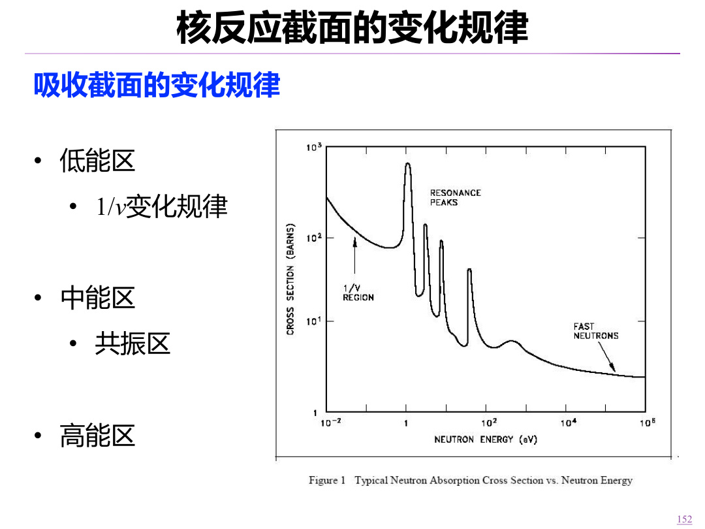
横轴是中子能量，纵轴是截面。读图既看趋势，也看坐标单位和数量级；对数横轴上相等的图像宽度代表相等的能量比，并不代表相等的能量差。
自测：看到截面曲线有一个峰，能直接断言它是裂变共振峰吗？
不能。先看曲线标注的反应道。总截面、俘获截面和裂变截面都可能有共振结构。
T02 · 来源
3. 低能吸收截面的1/v规律
在适用能区，许多核素的吸收截面近似满足 \(\sigma_a(v)v=\text{常数}\)。非相对论中子满足 \(E=m_nv^2/2\)，所以
\[\sigma_a(E)\sqrt E=\text{常数},\qquad
\sigma_a(E)=\sigma_a(E_0)\sqrt{\frac{E_0}{E}}.\]
能量降低到原来的四分之一，截面增为两倍。在双对数图上，\(\log\sigma_a=\log C-\tfrac12\log E\)，因而应看到斜率为 \(-1/2\) 的直线。课堂用“跑得慢容易被抓住”帮助形成直觉，又联系中子的波动性；这些类比不能单独推导指数，实际适用性仍由反应机制与核数据决定。
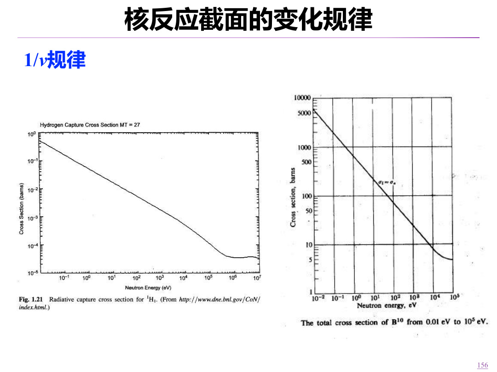
吸收不总等于辐射俘获。很多非裂变核素在低能区以俘获为主，可近似 \(\sigma_a\simeq\sigma_\gamma\)；对易裂变核素还必须计入裂变。硼-10的低能 \((n,\alpha)\) 反应也是重要吸收道，不能套用“所有带电粒子出射反应都有高阈值”的说法。
自测：1/v条件下，同一材料固定中子数密度n时，吸收反应率一定随速率降低而增大吗？
不一定。在单能模型中 \(r_a=N\sigma_a nv\)，而 \(\sigma_av\) 为常数，因此固定 \(N,n\) 时反应率不变。若固定的是通量，则截面增大会使反应率增大。要先说清固定了什么。
T03 · 来源
4. 2200 m/s基准与两个算例
热平衡中子有一个速率分布，并非所有中子都以同一速率运动。室温约293 K时，麦克斯韦速率分布的最可几速率约为2200 m/s，对应动能0.0253 eV。这个常用核数据基准满足 \(E(v_{\rm mp})=kT\)，不要把它与平均能量 \(3kT/2\) 或能量分布的众数混为一谈。温度升高，最可几速率随 \(\sqrt T\) 增大。
速度换算。 忽略相对论效应，由 \(v\propto\sqrt E\)，2 MeV中子的速率约为
\[v=2200\sqrt{\frac{2\times10^6}{0.0253}}
\simeq1.96\times10^7\,\mathrm{m/s}.\]
飞行时间还要看路径长。若平均自由程取5 cm，热中子飞过它需约 \(2.3\times10^{-5}\) s，而2 MeV中子只需约 \(2.6\times10^{-9}\) s；不能给各种能量统一套一个飞行时间，也不能直接将一次飞行时间当成堆内平均寿命。
吸收截面换算。 氢在0.0253 eV的吸收截面为0.332 b，按1/v规律换算到1 eV：
\[\sigma_a(1\,\mathrm{eV})=0.332\sqrt{0.0253/1}
\simeq0.0528\,\mathrm b.\]
计算中能量比必须使用同一种单位。课件的其他材料曲线和2200 m/s表可用于数量级比较：硼-10约3837 b、硼-11约0.005 b、氙-135约 \(2.7\times10^6\) b，说明同一元素的不同同位素也可能差别极大。精确计算须选定一致的数据版本。
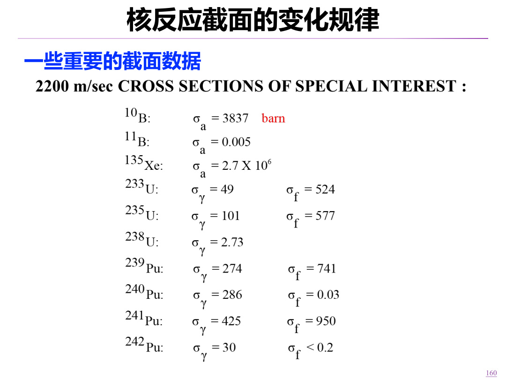
自测：将1 eV继续升到4 eV，氢的吸收截面约为多少？
在1/v近似仍适用时再除以2，得到约0.0264 b。
T04 · T05 · 来源
5. 共振峰与非1/v修正
重核或某些中等质量核的低能吸收可能偏离1/v，可引入修正因子；一个参考点此时不足以描述全部曲线。中能区的显著特征是共振：入射能量接近某些复合核能级条件时，相应反应截面大幅增大。铀-238在约6.67 eV处有很高的俘获峰，课堂材料给出的峰高约为数万b。
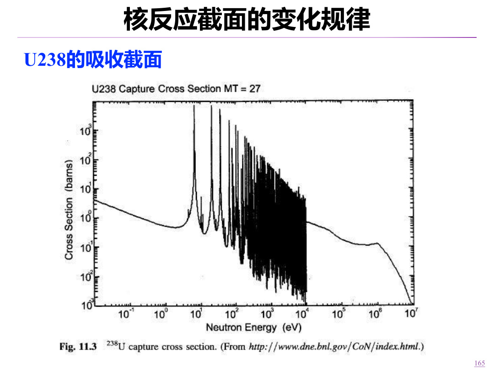
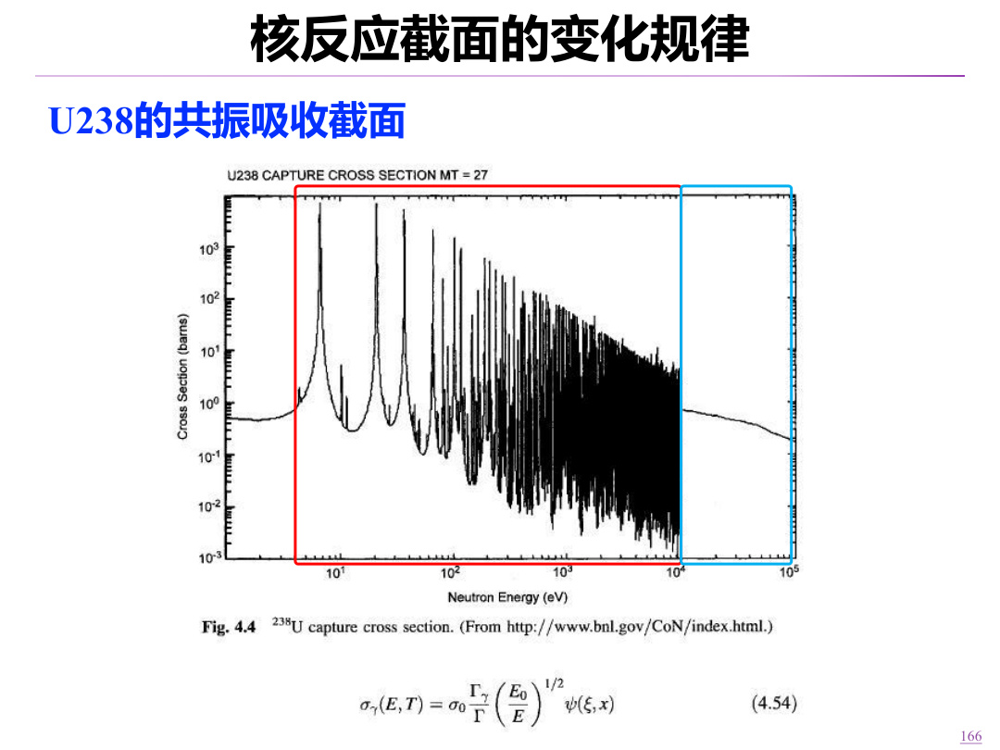
可分辨共振区可逐峰给出参数。图上画得很密、甚至发黑，不等于物理上已不可分辨；应结合能量标度、数据分辨能力和参数表示。不可分辨共振区往往使用统计参数处理，它也不等于“没有共振”。反应率依赖截面与通量的乘积，直接拿一条平滑平均线可能漏掉自屏蔽等影响。
高能区不少吸收曲线较低且相对平缓，是本讲的总体趋势，不能据此说任何核素、任何反应在高能区都单调下降。
自测：低能处一个看起来很宽的峰，实际能量宽度必然大于高能处的小峰吗？
不必然。对数横轴压缩高能端，必须读取峰左右两端实际能量再比较差值。
T06 · T07 · 来源
6. 非弹性散射和弹性散射的截面
非弹性散射需要把靶核激发，因此有阈能。重核低激发能级通常较低，堆内中子更容易打开这类反应道；轻核的阈能常较高。课件中的重核非弹性散射截面多为几个b。中子把一部分能量用于核激发，故这种反应对高能中子降能很重要，但不能把“重核阈值低”理解为每次必然比任何轻核损失更多能量。
弹性散射保持靶核内部状态不变。势散射可形成较平的背景，重核还有复合弹性散射共振；不能将所有弹性散射都视作纯几何碰撞。课件按半径 \(R=1.25\times10^{-13}A^{1/3}\,\mathrm{cm}\) 给铀-238列出约7.5 b的尺度，实际弹性散射约8.3 b。这里7.5 b对应 \(4\pi R^2\)，而几何投影面积 \(\pi R^2\) 约1.9 b，二者不能混写。
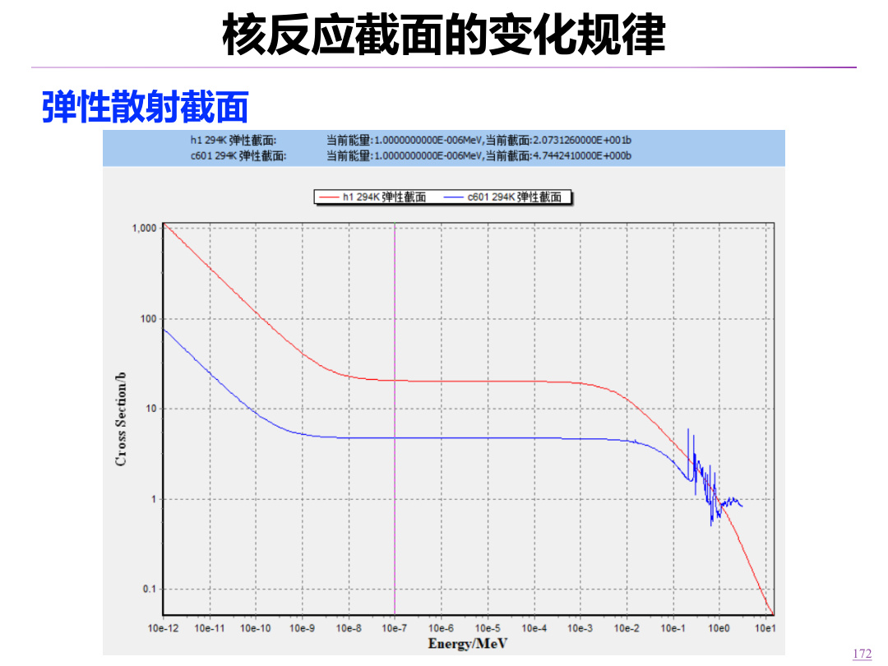
这张294 K图包含极低能端的上翘、很长一段平台及高能端的下降或结构。氢平台约20 b，碳平台约几个b；“上千b”只描述图中极低能端，不能说整段都是上千b。低能散射曲线还依赖靶核运动与材料状态，不能只凭吸收的1/v规律推断全部散射曲线。
自测：什么最直接地区分这两类散射的能量条件？
非弹性散射需要激发核内部自由度，有阈能；弹性散射本身不需要这种核激发阈能。具体曲线还须看核素和温度等条件。
T08 · T09 · 来源
7. 易裂变核素与阈能裂变
铀-235、铀-233、钚-239等易裂变核素可由热中子引发裂变。其裂变截面低能端通常较大、可近似有1/v趋势；中能区有共振；高能区数值较小、变化相对平缓。
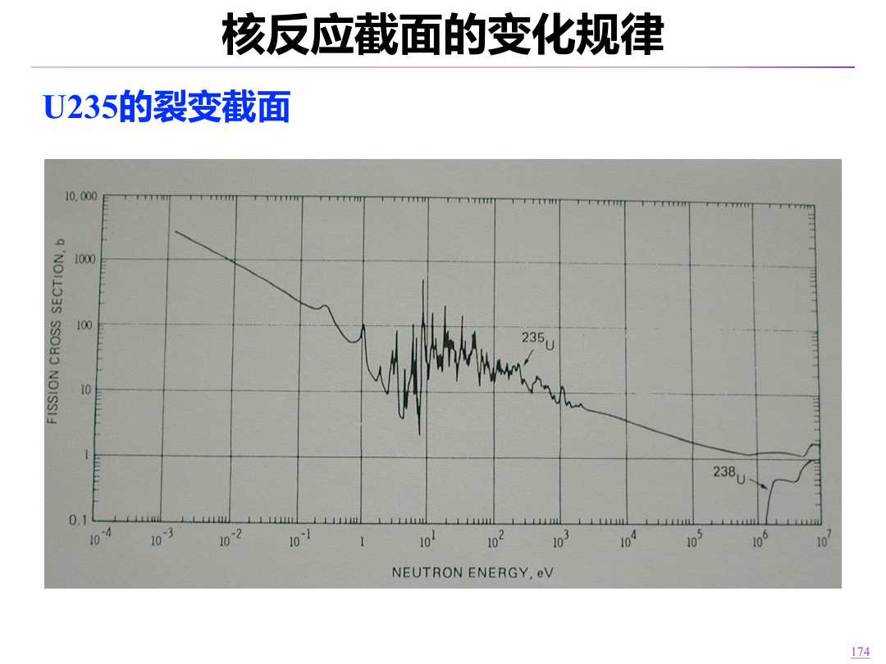
铀-238等需要较高能量才有显著裂变截面，曲线呈阈能特征。本课把它们与易裂变核素对照称为“可裂变核素”；更广义的“可裂变”也包含易裂变核素。课件第174页纵轴最低约为0.1 b，所以转写里“0.18以上才可见”的数字不能未经确认当成铀-238的精确阈能。
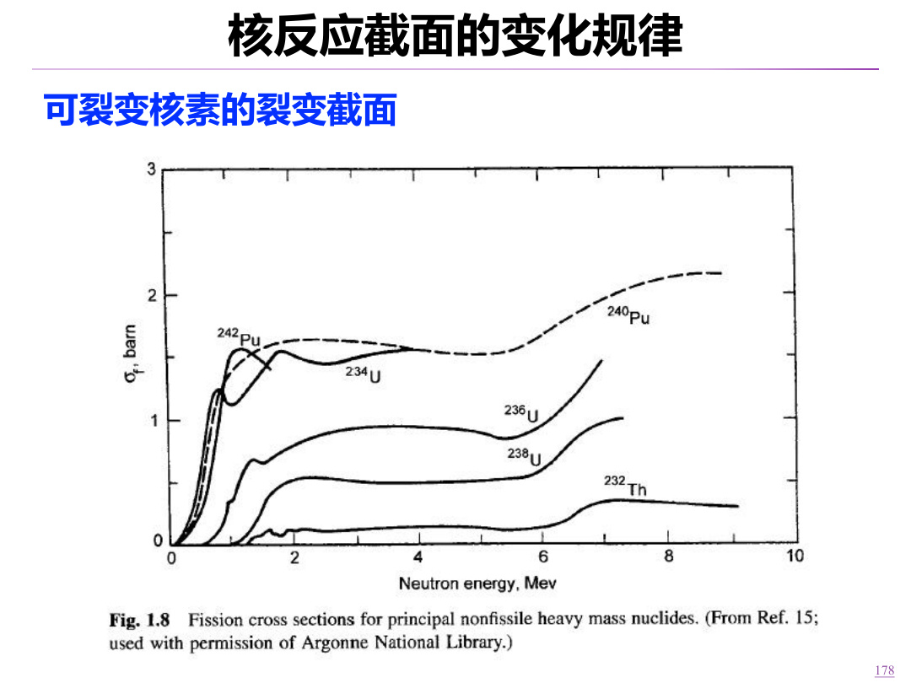
判断材料适合怎样的中子能谱，必须一起看裂变与竞争吸收，而不只看某一条裂变截面大不大。
自测：热中子能被铀238俘获，是否意味着它也能有效引起铀238裂变？
不是。俘获和裂变是不同反应道，打开裂变通道还需满足对应能量条件。
T10 · 来源
8. 核数据怎样进入计算
核数据不仅包含截面，还包括散射角分布、出射能谱、衰变常数和裂变产额。实验只能覆盖有限能量点和核素，因此需要结合实验误差、理论模型与一致性检验形成评价数据，再加工为计算程序使用的形式。
可以把使用过程分成三步：测量与理论提供信息，评价工作给出推荐数据及不确定性，处理程序根据温度、能群和输运方法生成应用库。ENDF-6和GNDS是数据表示格式，不能与某个库的版本或某个程序内部的存储格式混为一谈。相关公开入口见来源记录。
课堂举了CENDL和ENDF等名称，并以多群库、蒙特卡罗点截面库和GPU存储优化作比较。库的体积取决于核素数、温度数、能群结构和反应道等，“10 K”“10 G”属于课堂特定示意，不能作为所有程序的固定规格。数据、物理模型和计算方法要相互匹配。
自测：把同一评价库处理成多群库后，为什么还要交代所用能谱？
群平均往往涉及能谱加权，自屏蔽处理也依赖问题条件。相同原始评价并不保证不同处理所得群常数相同。
T11 · T12 · 来源
9. ν、α、η分别在平均什么
\(\nu\) 是每次裂变平均放出的中子数，\(\alpha=\sigma_\gamma/\sigma_f\) 是俘获裂变比，\(\eta\) 是燃料核每吸收一个中子平均产生的裂变中子数。若吸收只考虑俘获和裂变，则
\[\eta=\nu\frac{\sigma_f}{\sigma_a}
=\nu\frac{\sigma_f}{\sigma_f+\sigma_\gamma}
=\frac{\nu}{1+\alpha}.\]
推导的关键是：一次吸收以 \(\sigma_f/\sigma_a\) 的概率导致裂变，裂变后平均放出 \(\nu\) 个中子，其余俘获不产生这一裂变中子收益。\(\nu\) 大不等于 \(\eta\) 一定更大，还要看俘获竞争。
课件给出随入射能量变化的近似式，\(E\) 以MeV计：
\[\nu_{235}(E)=2.416+0.133E,\qquad
\nu_{239}(E)=2.862+0.135E.\]
这是近似关系，不是逐次裂变的固定整数，也不是任意高能都适用的精确公式。相同入射能量下，该式的钚-239平均中子数比铀-235多；低能端变化很小。相邻课件表给出的值略有差异，应在同一数据组内计算。
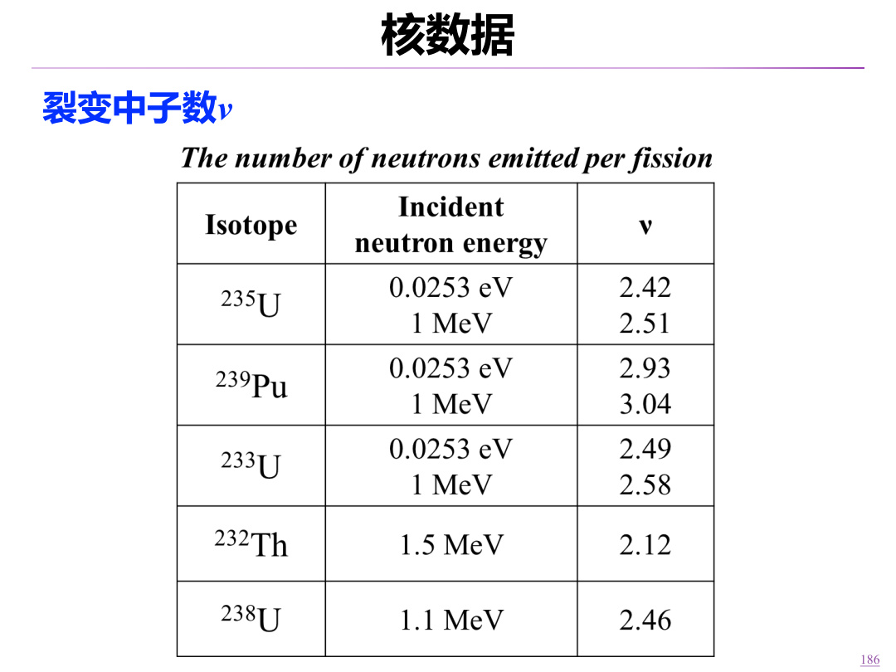
临界是整个系统中子产生与损失的平衡。实际堆中还要补偿非燃料吸收和泄漏，故燃料的 \(\eta\) 需要留出余量；\(\eta>1\) 不是充分临界条件，更不等于已经增殖。理想无额外损失的边界情形不能用“一律严格大于1”概括。
自测：若ν=2.4、α=0.2，η是多少？它能证明反应堆已经临界吗？
\(\eta=2.4/1.2=2\)。它只描述燃料吸收后的中子收益，还需考虑泄漏、其他材料吸收和能谱等，不能独立判断临界。
T13 · T14 · T15 · 来源
10. 裂变碎片、裂变产物与双峰产额
一次裂变有多种可能通道。裂变时直接形成的核是裂变碎片，它们及其后续衰变形成的核素合称裂变产物。产物不全是不稳定核，衰变链最终可到稳定核素。课堂用随机“掷骰子”说明：同样的初始条件可以产生不同碎片组合，因此需要统计平均的产额。
课件举出的两条守恒反应为
\[{}^{235}_{92}\mathrm U+n\rightarrow{}^{90}_{36}\mathrm{Kr}
+{}^{144}_{56}\mathrm{Ba}+2n+Q,\]
\[{}^{235}_{92}\mathrm U+n\rightarrow{}^{93}_{37}\mathrm{Rb}
+{}^{140}_{55}\mathrm{Cs}+3n+Q.\]
两式两侧质量数都为236、电荷数都为92。每次裂变平均产生某核素的个数称为该核素的裂变产额；质量产额 \(Y(A)\) 则把同一质量数的核素归在一起。
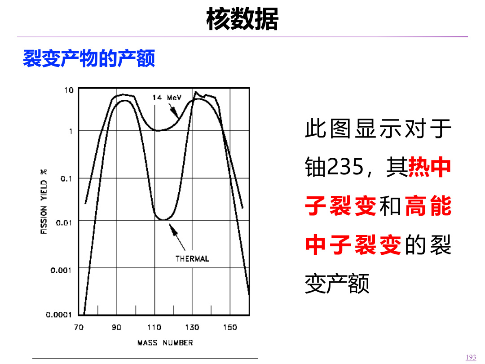
低能裂变的双峰说明非对称分裂占优势，课件示意峰在约92和144附近；不同曲线的精确峰位会变。14 MeV曲线在中间谷底明显抬高，所以图中 \(A\approx115\) 的高能裂变产额大于热中子产额。不能直接把14 MeV单能曲线当成所有快堆乏燃料的最终成分；实际成分还依赖核素、能谱、燃耗与冷却时间。
对通常两个重碎片的质量产额，\(\sum_A Y(A)\approx2\)，若用百分数则约200%。这不是对数纵轴上肉眼所见的几何面积，也不能把同一衰变链中各核素的累计产额全部相加后仍要求等于2。三分裂变修正取决于是否把额外轻粒子计入统计。
自测：为什么双峰总产额通常约200%，而非100%？
产额按“每次裂变产生多少个碎片”归一；一次通常有两个重碎片，每100次裂变约有200个，而不是只计一次事件。
T16 · T17 · 来源
11. 裂变产物与材料、放射源和环境
不同裂变核素和不同入射能量对应不同的产额曲线，因而产物组成可以帮助分析材料与辐照过程，但必须同时处理衰变、吸收和混合等影响。
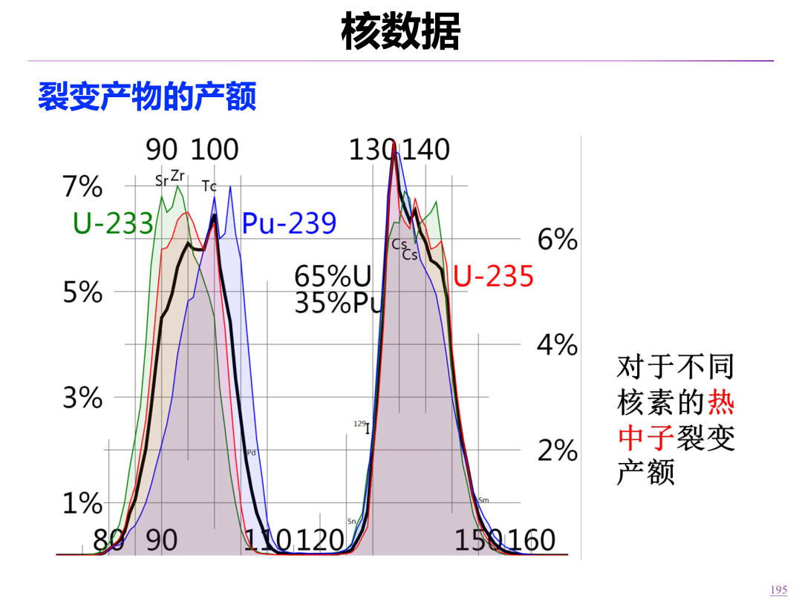
课堂问钴-60、铯-137和铱-192中，哪一种主要从裂变产物获得。用质量产额的典型范围判断，铯-137最符合；钴-60和铱-192的常用途径是中子活化，钴的例子为 \({}^{59}\mathrm{Co}(n,\gamma){}^{60}\mathrm{Co}\)。范围判断是线索，具体生产方式还需核反应与工艺依据。
裂变产物既影响中子收支和堆芯寿命，也带来衰变热与事故源项问题。例如强吸收核素会影响反应性；气态、易挥发的放射性产物在事故释放中需要特别关注。环境影响不能一概归结为裂变产物，活化产物等也可能参与；“所有放射性裂变产物自然界都不存在”也不是普遍成立的命题。
自测：为什么产额分析与堆芯寿命有关？
产物会继续衰变和吸收中子，改变材料组成与中子损失，进而改变维持链式反应的条件。
T18 · 来源
12. 每秒裂变次数怎样换成功率
一般估算取每次裂变可利用能量 \(E_f\approx200\,\mathrm{MeV}\)。用 \(1\,\mathrm{eV}=1.602\times10^{-19}\,\mathrm J\) 换算，
\[E_f\approx3.204\times10^{-11}\,\mathrm J,
\qquad \dot F=\frac{P_{\rm th}}{E_f}.\]
因此1 W热功率对应约 \(3.12\times10^{10}\) 次裂变每秒，1 MW对应约 \(3.12\times10^{16}\) 次每秒。这里的功率是热功率。
“百万千瓦核电站”通常指约1000 MW电功率。若热效率取 \(\epsilon=1/3\)，则 \(P_{\rm th}=P_e/\epsilon\approx3000\) MW，裂变率约 \(9.4\times10^{19}\,\mathrm{s^{-1}}\)，量级为 \(10^{20}\)。题目若未给热效率，精确答案要保留 \(P_e/(\epsilon E_f)\)，不能只把电功率代入热功率公式。
自测：为什么同样1000 MW电功率，效率提高后所需裂变率减少？
\(\dot F=P_e/(\epsilon E_f)\)。电功率固定时，效率越高，所需热功率越小。
T19 · 来源
13. 功率、燃料装量与中子通量
把裂变率关系代入功率式，最一般的表达应保留空间和能量积分：
\[P_{\rm th}=E_f\int_V\int_0^\infty
\Sigma_f(\mathbf r,E)\phi(\mathbf r,E)\,\mathrm dE\,\mathrm dV.\]
当有效宏观截面和通量可采用适当均匀平均时，简化为 \(P_{\rm th}=E_f\bar\Sigma_f\bar\phi V\)。固定材料、体积和能谱等条件，功率与通量成正比；如果只改变燃料核密度，\(\Sigma_f=N\sigma_f\) 变小，为保持同一功率就需提高通量。这一比例不自动适用于组成和能谱一起变化的堆。
课堂例题。 已知 \(\phi=3\times10^{13}\,\mathrm{cm^{-2}s^{-1}}\)、\(N=10^{20}\,\mathrm{cm^{-3}}\)、\(r_f=1.29\times10^{12}\,\mathrm{cm^{-3}s^{-1}}\)，先算
\[\Sigma_f=\frac{r_f}{\phi}=0.043\,\mathrm{cm^{-1}},\qquad
\sigma_f=\frac{\Sigma_f}{N}=4.3\times10^{-22}\,\mathrm{cm^2}=430\,\mathrm b.\]
“反应率”题设的单位含每立方厘米，因此这里实际给的是反应率密度，不应再误除一次体积。
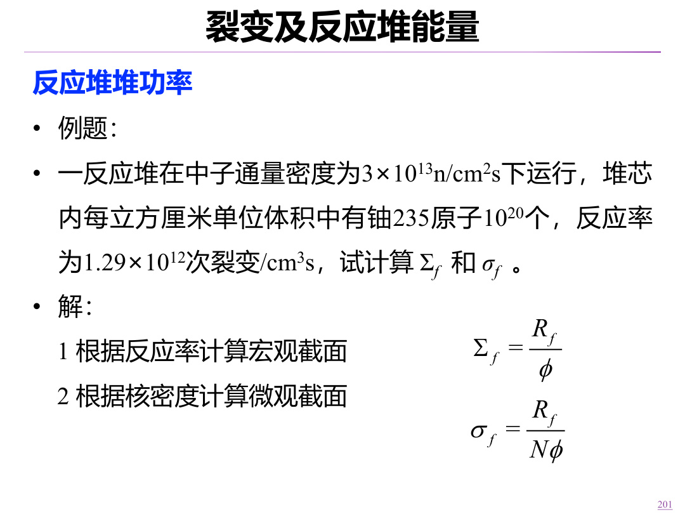
自测：上题所得430 b应直接当作2200 m/s的标准裂变截面吗？
不能。它是题设反应率与通量对应的有效截面；题设未给出单能或完整能谱，不能擅自认定为标准热截面。
T20 · T21 · 来源
14. 功率密度与燃料比功率
堆芯功率密度按堆芯体积归一，\(q_V=P_{\rm th}/V\)；燃料比功率按指定燃料质量归一，\(q_m=P_{\rm th}/M_f\)。它们都以热功率为分子，分母却不同；工程使用还要说清质量是重金属质量还是燃料化合物质量。
用课堂压水堆数量级 \(q_V\approx100\,\mathrm{MW/m^3}\)、\(q_m\approx35\,\mathrm{MW/t}\) 和3000 MW热功率估算，堆芯体积约30 m³，按课件质量口径折算燃料装量约86 t。这是数量级算例，不是所有压水堆的固定参数。
在其他条件相近、同一质量口径和能谱近似相同的前提下，富集度提高意味着每单位燃料中易裂变核更多。若保持同样燃料比功率，就能用较低通量达到同样的单位质量裂变率。
自测：比功率是“所有热量都产生于燃料内部”的意思吗？
不是。它是按燃料质量归一的系统功率指标，部分能量实际可沉积在慢化剂、冷却剂或其他材料中。
T22 · 来源
15. 200 MeV由谁携带，又在哪里变成热
裂变能来自反应前后的质量差 \(Q=\Delta mc^2\)。它先表现为碎片、中子、电子等粒子的动能以及光子和中微子携带的能量，之后通过相互作用沉积到材料中。
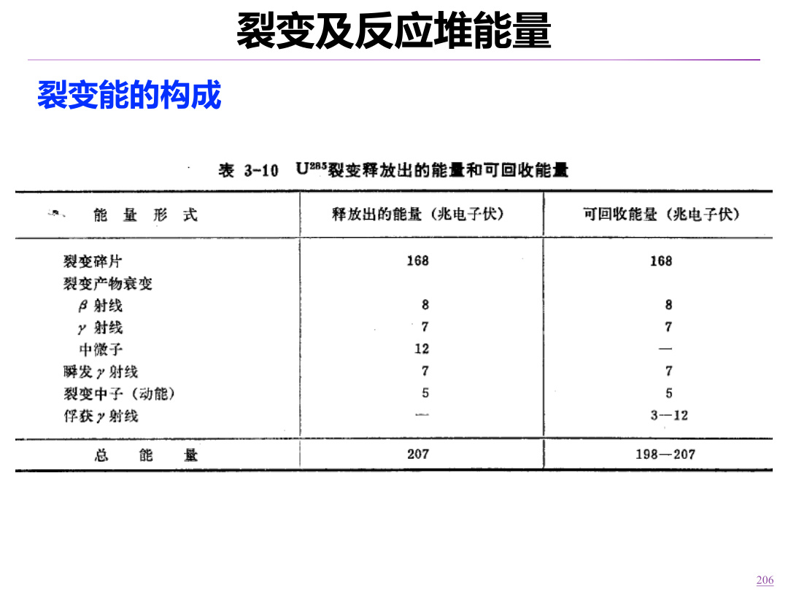
按课件的铀-235示例，碎片动能约168 MeV，裂变中子动能约5 MeV，瞬发γ约7 MeV，裂变产物衰变β约8 MeV、γ约7 MeV，中微子约12 MeV，总计约207 MeV。碎片和β射程短，主要在产生地附近沉积；中子降能将能量传给慢化剂等材料；γ射程较长，可在堆内多处沉积。裂变产物β衰变伴随的反中微子能量不能全部当成裂变瞬间释放。
中微子携带的能量基本逃逸，扣除后约195 MeV；裂变中子在材料中被俘获又释放约3–12 MeV，按课件口径得到约198–207 MeV可回收能量。这样才理解为何工程估算统一取约200 MeV，不能把“总释放207”与“可回收200”看成矛盾。
课件还给出具体核素的估算关系
\[E_f\approx1.29927\times10^{-3}Z^2\sqrt A+33.12
\quad(\mathrm{MeV/fission}).\]
由此算得铀-235约201.7 MeV、钚-239约210.6 MeV；这是经验近似。它说明两者均在200 MeV附近，而非所有核素具有完全相同能量。热功率已经扣除了基本逃逸的能量，电功率还要再乘热效率。
自测：停堆后是否还能释放上述表格中的部分能量？
能。裂变产物的β、γ衰变有时间延迟，是停堆衰变热的重要来源。
T23 · T24 · 来源
16. 用平均自由程理解中微子能量损失
课堂给定示意截面 \(\sigma=10^{-43}\,\mathrm{cm^2}\)，材料靶核数密度 \(N=10^{23}\)–\(10^{24}\,\mathrm{cm^{-3}}\)。取较大的 \(N\) 得
\[\Sigma=N\sigma=10^{-19}\,\mathrm{cm^{-1}},\qquad
\lambda=\frac1\Sigma=10^{19}\,\mathrm{cm}=10^{14}\,\mathrm{km}\approx10.6\text{ 光年}.\]
若取较小的核密度，自由程再增大十倍。课件的截面只是本题数量级输入，实际中微子截面依赖能量、粒子种类和反应道。
平均自由程极长意味着单个粒子在小探测器内发生反应的概率极小，不意味着完全探测不到。总事件率还含靶体积：均匀近似为 \(\mathcal R=N\sigma\Phi_\nu V\)。增大探测体积、增加通量或选择适当反应道，都可能增加事件数；靠近反应堆是提高某类反应堆中微子通量的办法。反应堆只是中微子源之一，太阳等也产生中微子。
自测：只增加探测器体积，会改变材料的平均自由程吗？
不会。材料和能量不变时 \(\lambda=1/(N\sigma)\) 不变，但靶总数增加，总事件率可以提高。
T25 · T26 · 来源
17. 停堆后的发热来自哪里
停堆使自持链式裂变反应受到抑制，裂变功率迅速下降；堆内已有的放射性核素仍继续衰变，所以总热源不会瞬间为零。主要的裂变产物衰变热还受到运行期间积累的种类和数量控制，因此与停堆前功率、运行历史、燃料组成和堆型有关。
课件用恒定功率运行 \(T\) 秒、停堆 \(t\) 秒后的经验式估算：
\[P_d(t,T)=4.1\times10^{11}P_0
\left[t^{-0.2}-(t+T)^{-0.2}\right]\quad\mathrm{MeV/s},\]
其中 \(P_0\) 的数值单位为W，时间数值单位为s。乘上 \(1.602\times10^{-13}\,\mathrm{J/MeV}\) 后，可把功率统一写成W：
\[\frac{P_d}{P_0}\approx0.0657
\left[t^{-0.2}-(t+T)^{-0.2}\right].\]
前式的MeV/s不能直接当作W；经验系数与规定单位绑定。该式不适用于 \(t=0\)，也不能替代完整核素清单的衰变计算或工程设计所需模型。不同教材经验式的系数与适用区间可能不同，应整式核对。
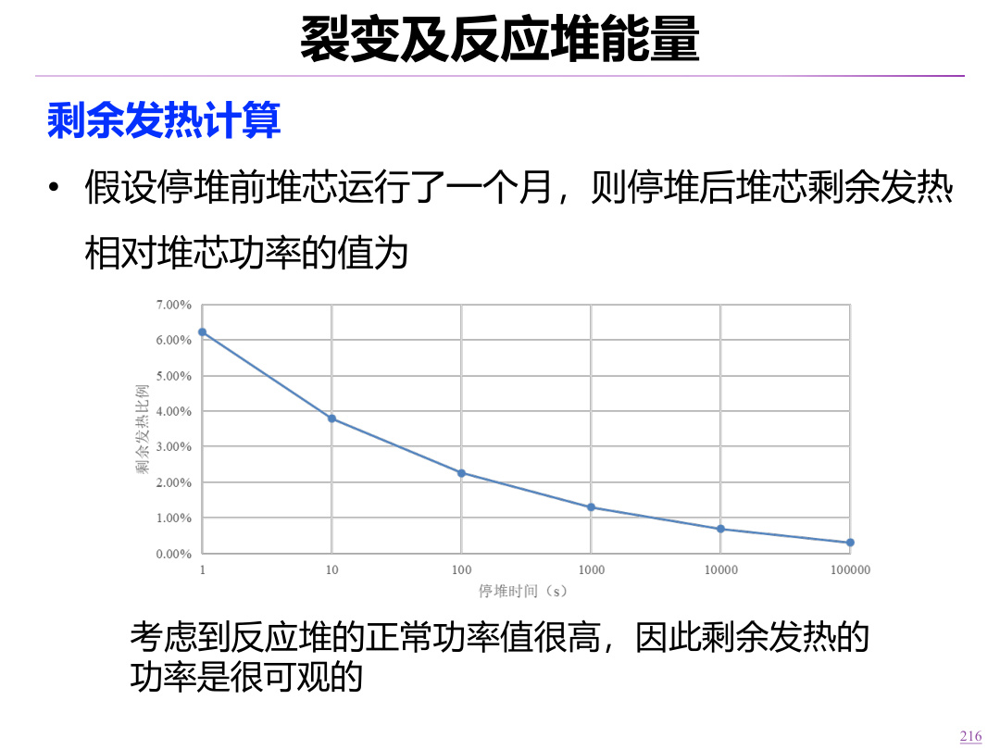
图中横轴为停堆时间的对数坐标。总功率随时间下降，但它是许多衰变链和半衰期共同作用的结果；本页经验式为幂律组合，不能直接认成一个单一指数函数。
自测：为什么两座停堆前功率相同的堆，停堆后余热可能不同？
运行时长和燃料历史不同，积累的放射性核素不同。经验式中的 \(T\) 已反映这一差别的一部分。
T27 · T28 · 来源
18. 从百分数算出余热的实际规模
百分数小不等于热功率小。对3000 MW热功率的堆，6%是180 MW；1%仍是30 MW。课堂按图把停堆一小时后的比例近似读成1%，用于后续估算。若取运行30天并严格代入上一节经验式，\(t=3600\) s时约为0.93%，与这一读图量级一致。
假设此后一分钟内功率按30 MW不变、全部传给水且无散热，从0℃加热到100℃所需热量满足
\[Q=P_d\Delta t=30\times10^6\times60=1.8\times10^9\,\mathrm J,\]
\[m=\frac{Q}{c_p\Delta T}
\approx\frac{1.8\times10^9}{4.2\times10^3\times100}
\approx4.3\times10^3\,\mathrm{kg}.\]
这说明一分钟能把约4.3 t水加热到沸点。若还要把水全部汽化，必须继续计入汽化潜热，不能把这个答案解释成“烧干4 t水”。
当功率变化时，累计能量应由 \(Q=\int P_d(t)\,\mathrm dt\) 求得。图的时间轴若是对数坐标，肉眼看到的曲线下面积不能直接等同焦耳数。
自测：若按30 MW恒定一分钟，求的是能量还是功率？
求得 \(1.8\times10^9\) J能量。瓦是焦耳每秒，功率乘时间得到能量。
T29 · 来源
19. 排热路径与本讲的工程落点
停堆解决的是链式反应控制，排热系统解决的是已积累能量和持续衰变热的导出，两者都需要。课堂用三里岛和福岛说明冷却丧失的严重后果；具体事故过程需要专门资料，不能用一句原因概括完整事件。
能动冷却依靠泵等设备，非能动排热利用重力、自然循环等驱动力。非能动不意味着不需要设备、热阱或适用条件；仍要有连续的传热路径，把热量从燃料传到最终环境。课件以华龙一号作示意，课堂又提到高温气冷堆的固体导热与外围冷却、钠冷快堆的余热换热器和自然循环。这些例子都要回答“热从哪里来、经过什么介质、最后排到哪里”。
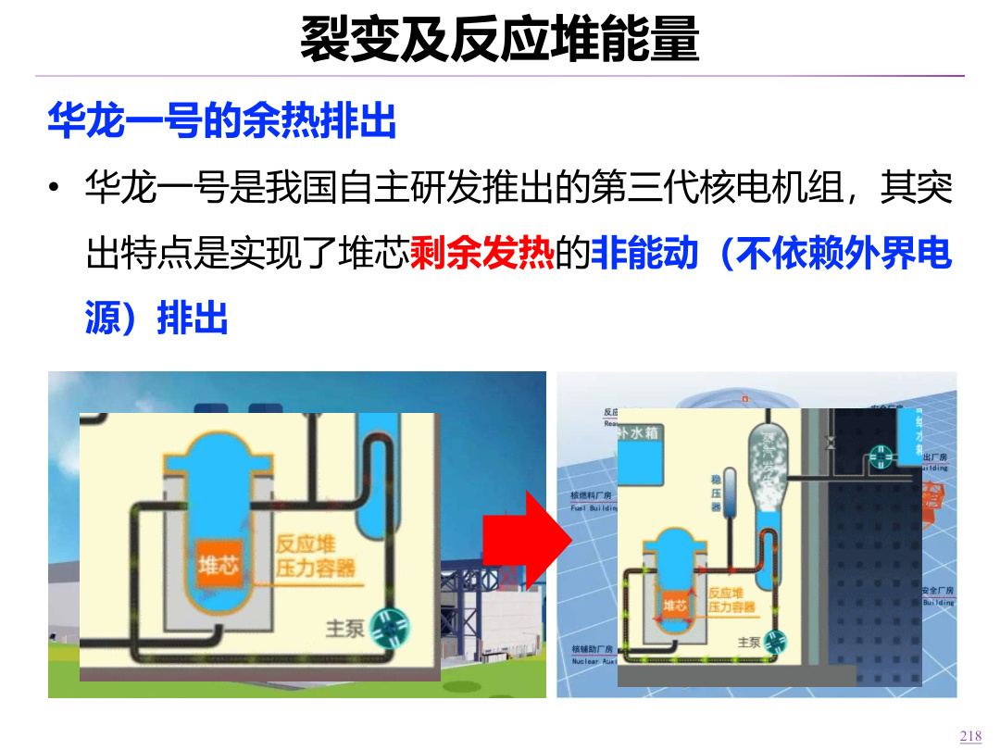
ECCS是应急堆芯冷却系统的英文缩写，是相关安全设施的一类，不能把所有余热排出系统都直接叫作ECCS。余热问题还延续到乏燃料湿法或干法储存、运输和地质处置；长寿命放射性产物不会因为燃料离堆而停止发热。
自测：没有持续裂变，为什么仍需要热阱？
已有放射性核素持续释放衰变能。没有最终吸热和散热条件，内部循环本身并不能永久带走热量。
T30 · T31 · 来源
课堂学习要求与教材练习入口
课堂建议每讲后用约10分钟整理主要知识点；本次还提出查热平衡中子的速率与能量分布、对比材料截面表、查阅非1/v修正及散射资料、了解专用核数据库和余热经验式。没有给出必须提交的统一作业题号。
可用教材第14稿例题2-8，PDF65–66练习“下一次反应”与“最终吸收”的概率区别：题给俘获101 b、裂变577 b、散射13 b，分别询问下一次发生俘获和最终发生俘获的概率。后者需结合题设隐含的无泄漏、截面不随历程改变的理想化条件理解。它是本讲的配套练习入口，不是教师新布置的作业。
另可回查教材PDF55的式(2-17)、PDF65的式(2-19)、PDF162–163的能量表和功率式。课件220页起的裂变中子能谱、缓发中子和燃料消耗留待后续课堂。
课堂回顾：截面规律与裂变能量
完整讲义 · 来源与订正
1. 上讲回顾：通量、反应率与平均截面
00:08–04:22 · 课件PDF 89,94,97-99 · 对应讲义
展开对应课件页
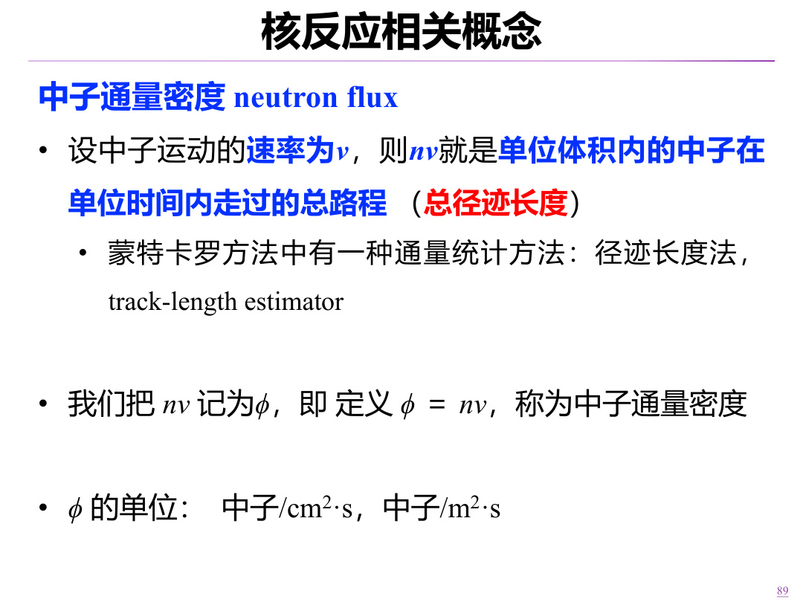
PDF 第 89 页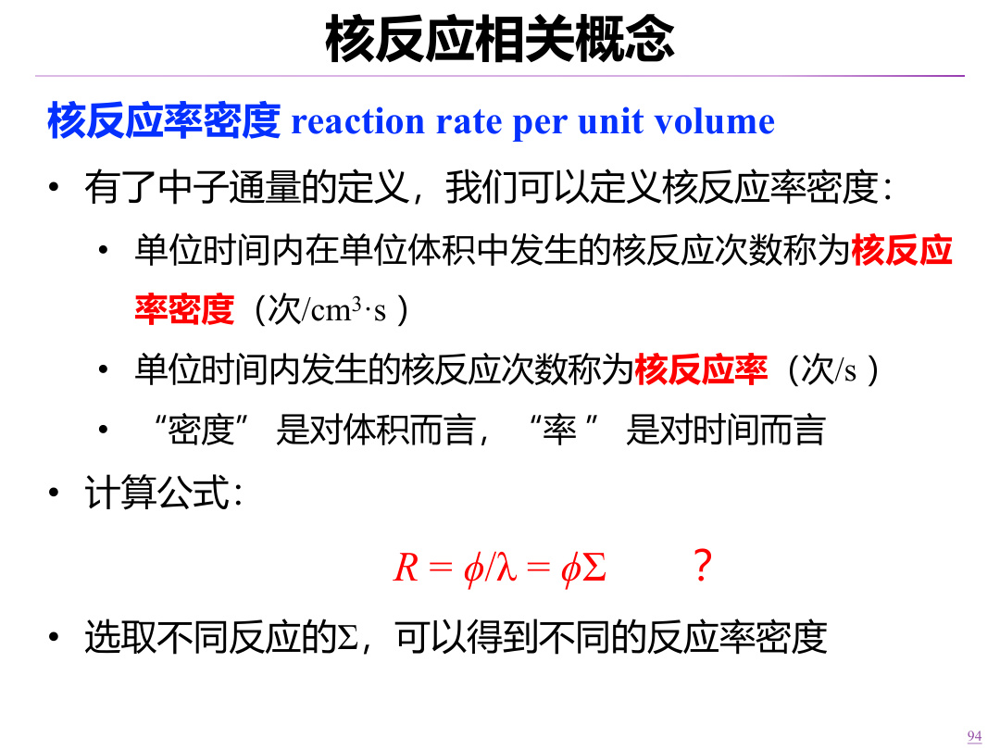
PDF 第 94 页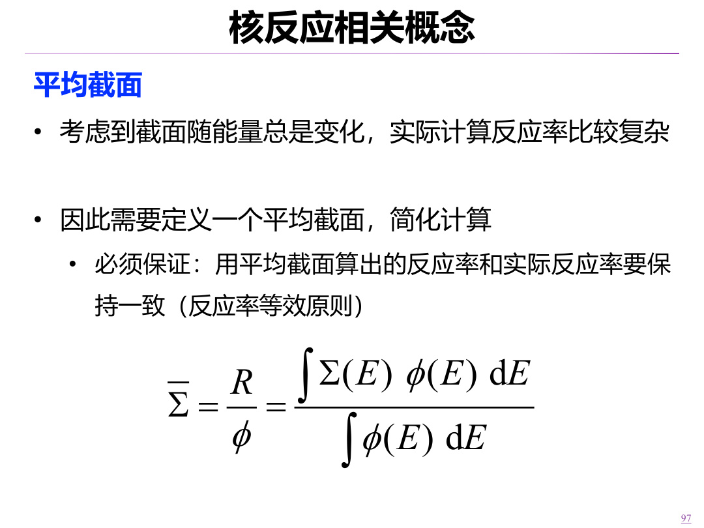
PDF 第 97 页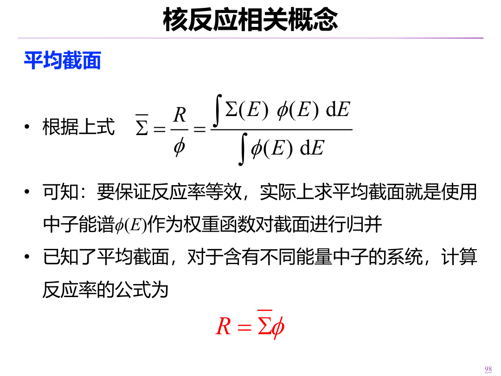
PDF 第 98 页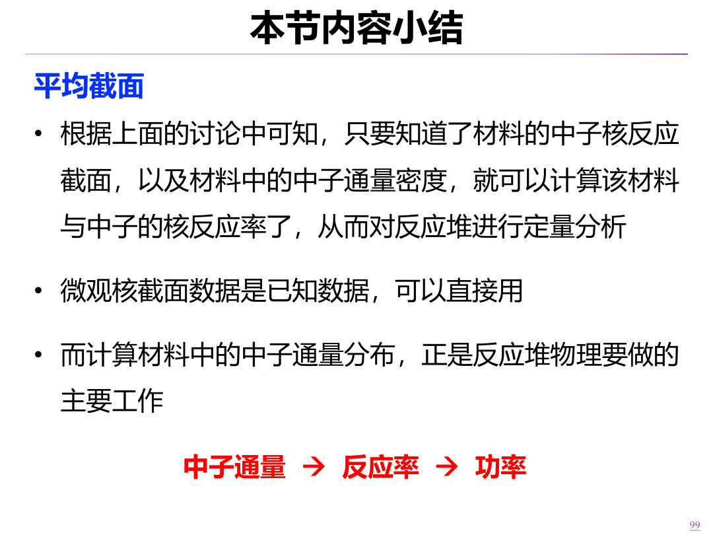
PDF 第 99 页上课前先回顾一下：Φ是什么？是中子通量密度。不能只记住n乘v，还要说出定义：单位体积内所有中子在单位时间走过的径迹总长度。n是自由中子数密度，v是速率。我们关心某个地方发生多少次核反应，用反应率密度r表示；若考察均匀体积V内的总反应率，就再乘V。名称中的“率”与时间有关，“密度”与体积有关。
反应率密度等于宏观截面乘通量。从平均自由程来理解，宏观截面是平均自由程的倒数，总径迹长度除以平均自由程，就得到反应次数。截面又随中子能量变化，所以我们上节课为了保持反应率不变，引入通量加权的平均截面：将Σ(E)Φ(E)在能量上积分，再除以Φ(E)的积分。
上节课讲了很多内容，凝练下来就是这些核心联系。大家课后可以花十分钟回顾、整理。教师提到自己尝试让AI出一道分段能量区间的平均截面题，觉得可以用来检验理解；学习时仍应围绕知识点，避免学过就忘。每次课开头也会带大家作这样的回顾。
2. 截面的影响因素与三个能区
04:22–08:29 · 课件PDF 150-153 · 对应讲义
展开对应课件页
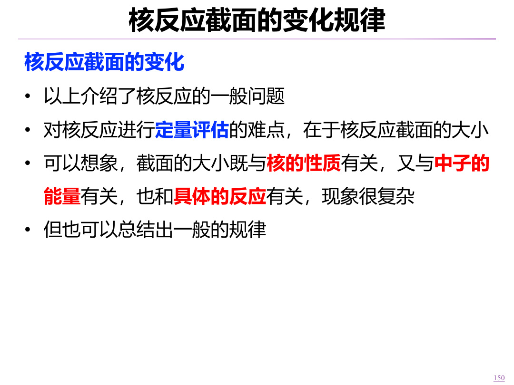
PDF 第 150 页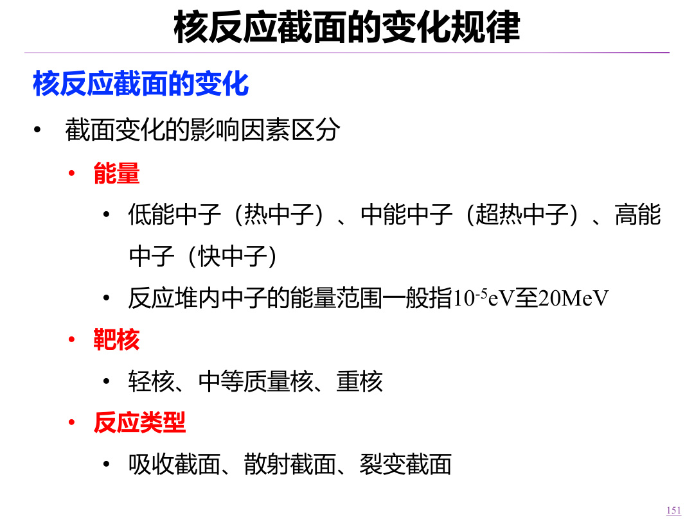
PDF 第 151 页PDF 第 152 页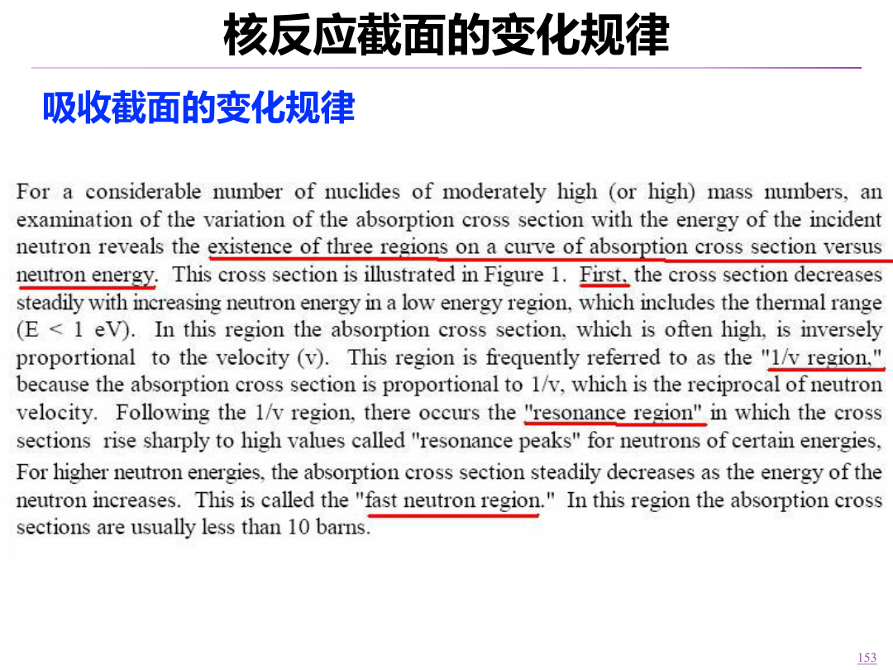
PDF 第 153 页本节来研究截面怎样随能量变化。定量计算核反应率的一个难点就是截面：同样的中子去碰氢或铀-235，结果不同；1 MeV与0.01 eV的中子去碰同一种核，结果也不同；同一入射条件下，裂变、吸收、散射又各有自己的截面。因此需要同时考虑靶核、能量和反应类型。
能量可大致分为低能的热中子、中能或超热中子、高能快中子。课件给出的堆内范围从10⁻⁵ eV到20 MeV，跨度很大。靶核又可分为轻核，例如氢、氧、碳；中等质量核，例如铁；以及铀、钚等重核。
先看典型吸收截面图。横轴是中子能量，纵轴是截面，大致可分为三个区域：低能区有1/v规律，中能区有共振，高能区的截面通常较小。这里先把整体形状记住，再分别看每一区域；英文说明也可以对照阅读。
3. 低能吸收与1/v规律
08:29–15:09 · 课件PDF 154-156 · 对应讲义
展开对应课件页
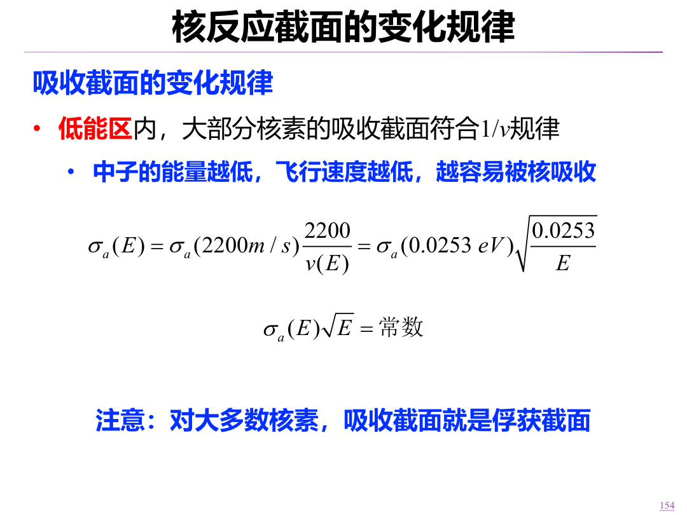
PDF 第 154 页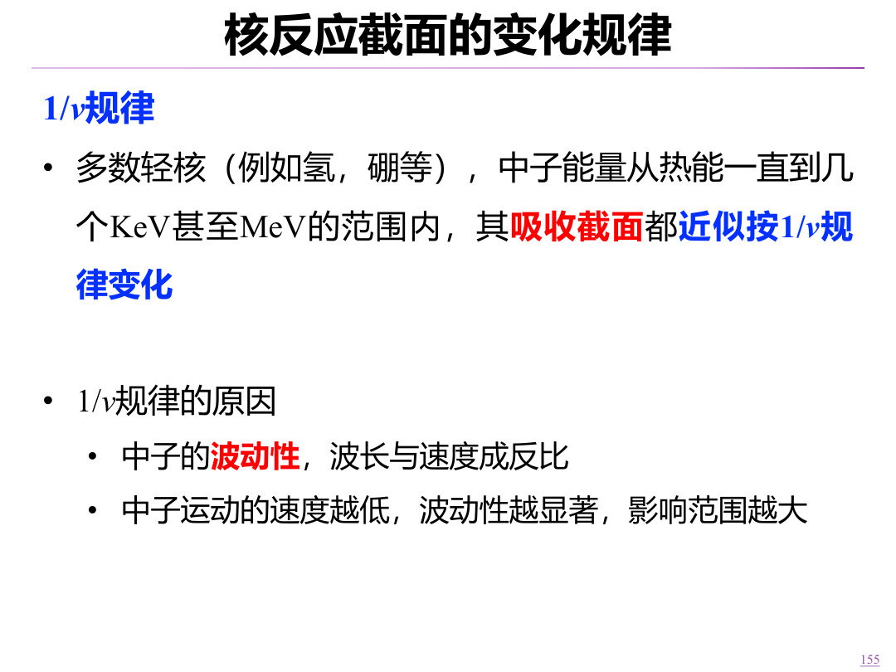
PDF 第 155 页PDF 第 156 页低能区内，许多核素的吸收截面满足σₐ(v)v为常数。由E=mv²/2可知v正比于能量的平方根，因此σₐ(E)√E也是常数。能量越低、速率越低，吸收截面越大。
直观地想，两名同学一人去拉住另一人，跑得慢时容易拉住，跑得快时不容易。课堂借这个例子帮助理解低速中子容易被吸收。对于很多核素，在低能区主要发生辐射俘获，吸收截面因而近似等于俘获截面；不过裂变也是吸收后的可能结果，其他反应道也要结合具体核素和阈能判断。
课堂接着问0.0253 eV代表什么。有同学先答快中子，随后明确它是室温热中子的代表性能量。对氢、硼等一些轻核，1/v近似可延伸到较宽能区，但应按各自曲线判断。
教师又从波粒二象性作直观解释：中子速度低，德布罗意波长大，不能简单想成刚性小球一定要正面撞上原子核才发生作用。前面有同学问过“波长这么大，还能当粒子碰撞吗”，这里用截面等效描述这种相互作用的概率。
看氢和硼的曲线，不能只说“向下”。为什么它体现1/v规律？因为双对数坐标下是负斜率直线。课堂也把实验曲线与理论模型的相互印证联系到科学发展的过程，提醒大家学习这些规律时同时理解实验与理论的关系。
4. 标准热中子速率与飞行时间
15:09–18:54 · 课件PDF 157 · 对应讲义
展开对应课件页
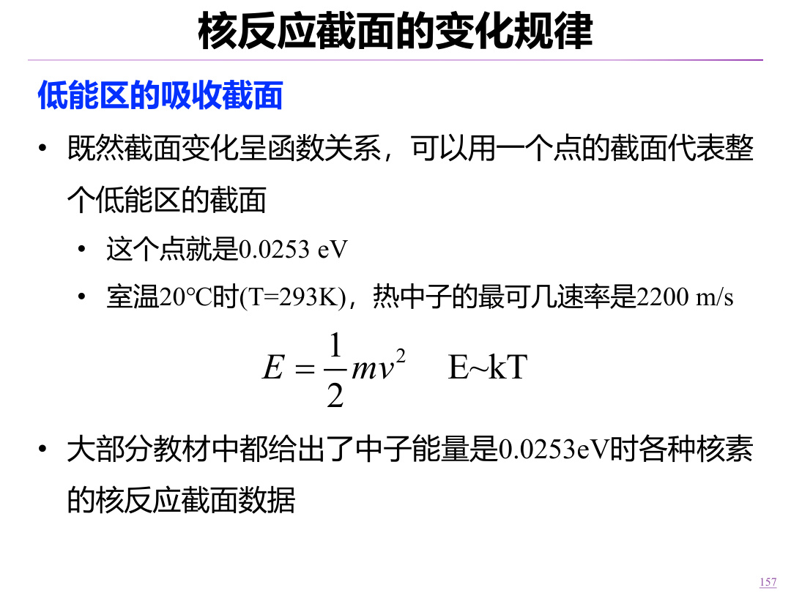
PDF 第 157 页既然1/v区有确定函数关系，就不必把每个点都记下来，可以选一个参考点。常用的是0.0253 eV，它对应室温20℃、约293 K时热中子的最可几速率2200 m/s。温度升高，这个速率也会升高。大家课后可以查热平衡时中子的速率和能量分布，理解E、kT之间的联系。
很多教材给出的热中子截面就是这个参考能量下的值。现在问：不考虑相对论效应，2 MeV中子的速度大约是多少？可以用速度与能量平方根的比例来换算，得到约2×10⁷ m/s。注意0.0253 eV换为MeV时的指数。
这也帮助大家形成中子运动很快的数量级印象。若宏观截面是零点几每厘米，平均自由程就是几厘米；再结合速度，可以估算飞行时间。课堂由此引出后续将学的中子寿命等概念，要求把前面举过的数联系起来。不同能量对应的飞行时间有很大差别，具体数值见讲义算例。
5. 氢吸收截面算例、数据表与修正
18:54–21:43 · 课件PDF 158-163 · 对应讲义
展开对应课件页
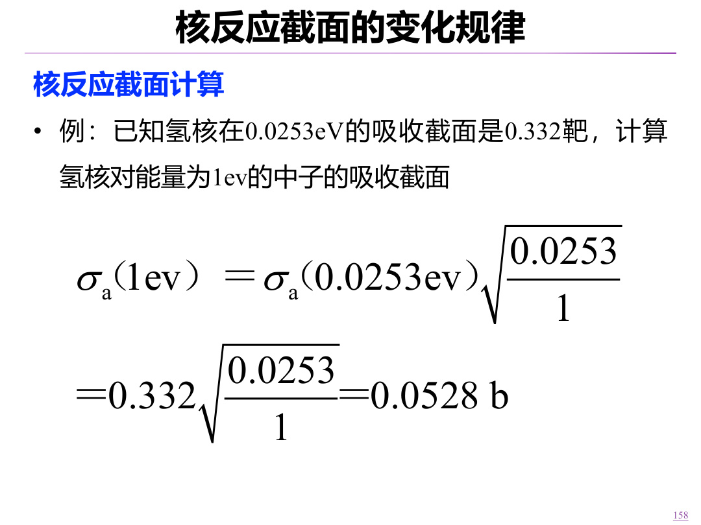
PDF 第 158 页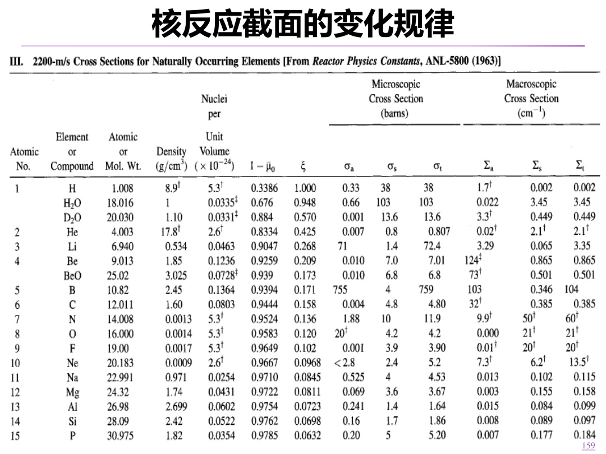
PDF 第 159 页PDF 第 160 页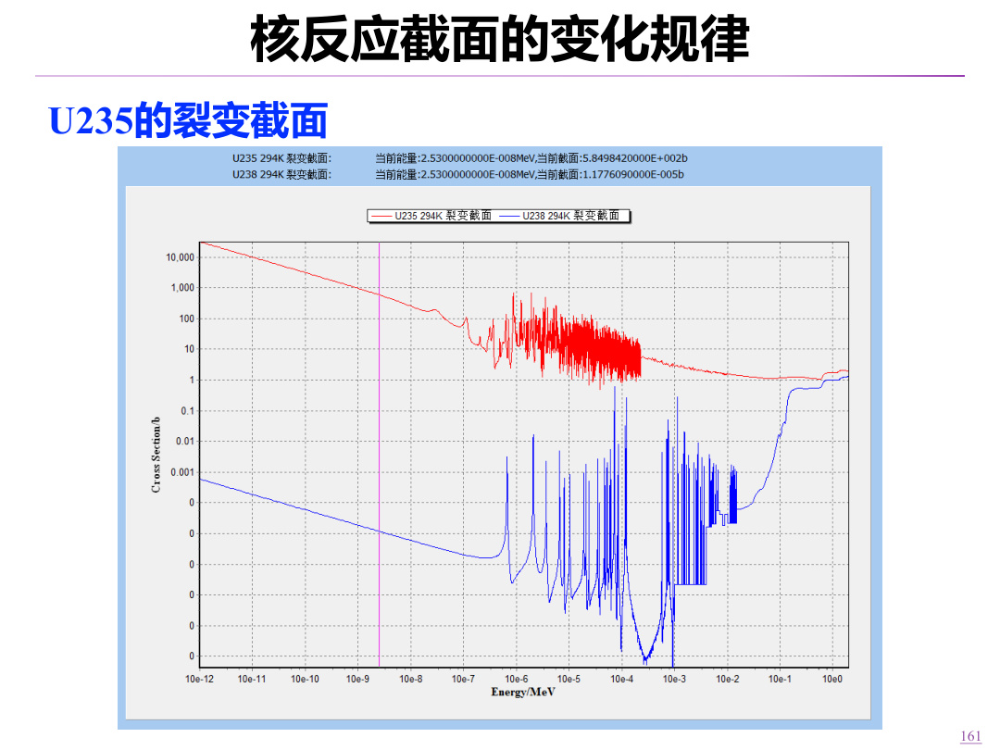
PDF 第 161 页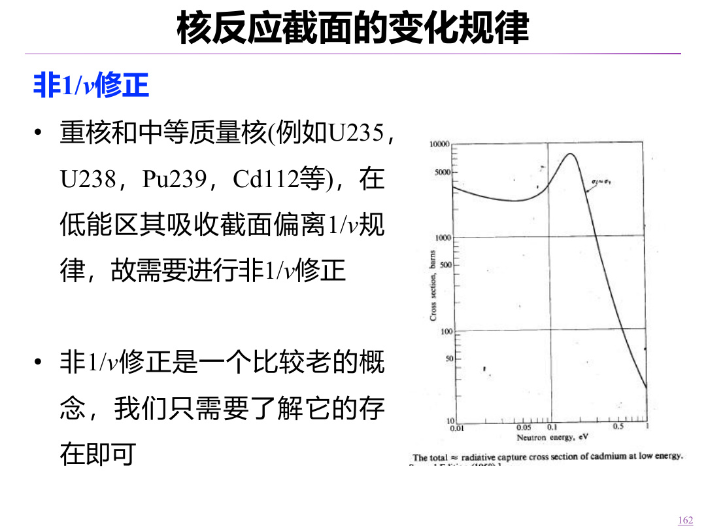
PDF 第 162 页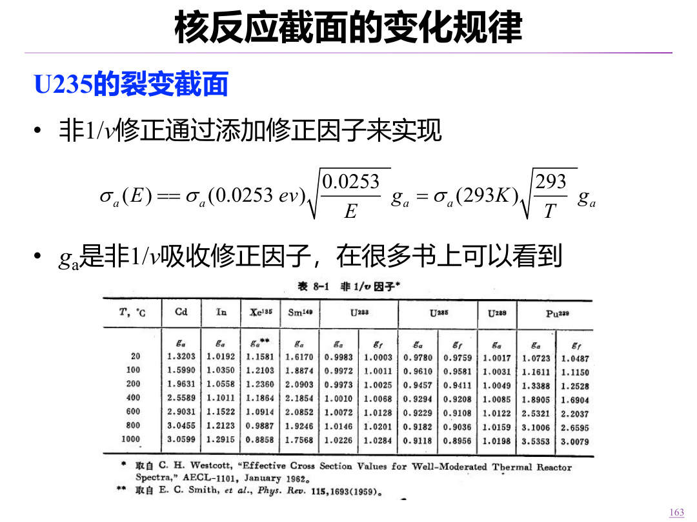
PDF 第 163 页已知氢在0.0253 eV的吸收截面是0.332 b，求1 eV时的吸收截面。按照σ√E为常数，把0.332乘以√0.0253，再除以√1，得到约0.0528 b。有了这条规律，就能由一个基准点估算适用区内其他能量的截面。
后面还有氢、水、氘、重水等曲线，大家可以课后比较。看2200 m/s的数据表，硼-10吸收截面有3800多b，硼-11却很小，氙-135达到10⁶ b量级。不要把不同核素都想成同一种数量级。
再看铀-235和铀-238的裂变截面：低能端似乎也有1/v趋势，中间振动很复杂，而铀-238在较高能量后才有明显裂变截面。为什么裂变截面也会有类似低能规律？先留着这个问题，后面会回来看。
真实数据并不都严格符合1/v，所以还有非1/v修正，课件用修正因子表示。本课只要求了解这种偏离和修正的存在，没有继续推导。
6. 铀238俘获共振
21:43–24:00 · 课件PDF 164-165 · 对应讲义
展开对应课件页
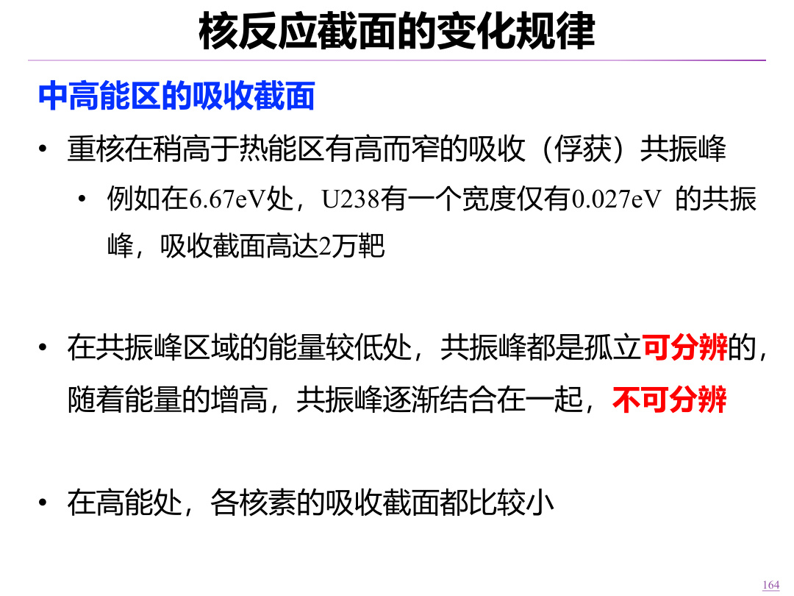
PDF 第 164 页PDF 第 165 页重核在稍高于热能的区域会出现高而窄的吸收或俘获共振峰。例如铀-238在6.67 eV附近有一个很高的峰，课件列出很小的宽度和约两万b的峰高。较低能量处的峰比较孤立，可以分辨；往高能走，峰越来越密，会进入不可分辨共振区。
从总体趋势看，低能区是1/v，重核中能区有共振，高能区的吸收截面通常较小。课堂用“高能中子更像快速通过的小粒子”作直觉说明。
现在看铀-238这张图，英文写的是capture cross section，指俘获截面。6.67 eV附近的高峰和后面一串密集峰很明显，更高能端的截面整体降低。口述读图提到另一峰高数值，精确峰高与宽度应回查来源记录，不靠口述近似值作核数据计算。
7. 怎样辨认可分辨共振区
24:00–25:49 · 课件PDF 166-167 · 对应讲义
展开对应课件页
PDF 第 166 页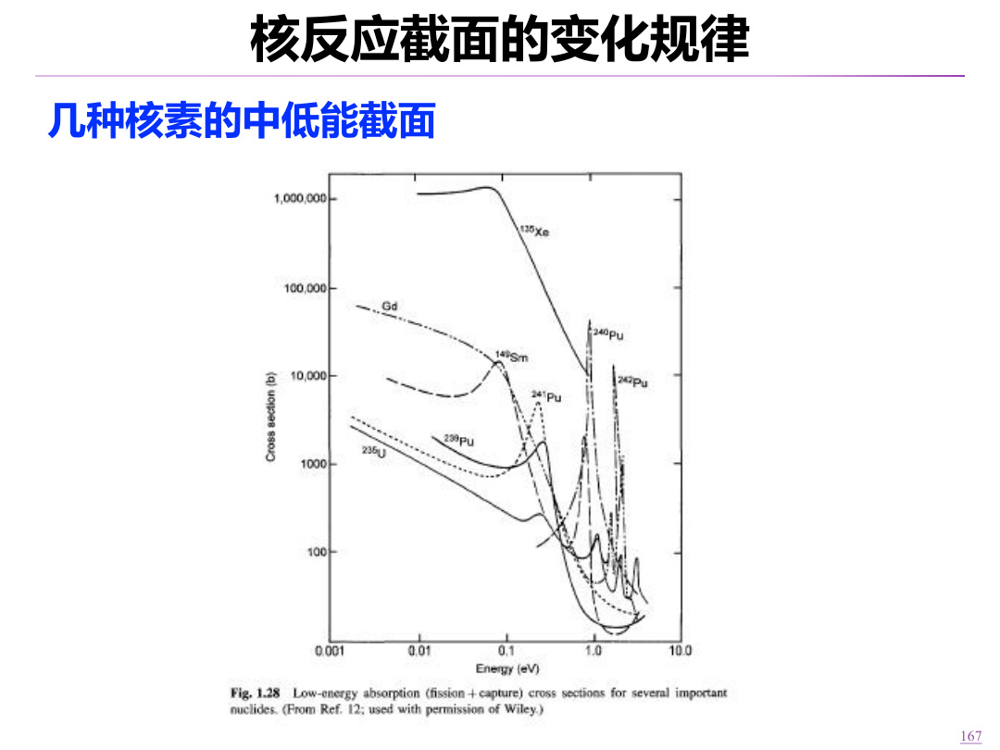
PDF 第 167 页问大家哪一段是可分辨共振区。有同学看到后面的峰黑成一片，以为已经不可分辨，其实那一段仍可能是可分辨峰，只是横轴范围很大，画得太密。
再问前面与后面的峰哪个实际更宽。不能只看纸上的宽度，因为横轴是对数坐标，前面看着宽的峰，实际能量宽度可能很小。不可分辨区在图的更高能部分，用平滑表示并不意味着没有共振。
做反应堆物理计算，特别是快堆计算时，仍需考虑这里的共振作用，不能随便取一个平均截面就结束，否则结果可能差很多。后续慢化章节还会展开。课件还给出几种核素的中低能及高能截面，大家再用这些图检查“低能1/v、重核共振、高能通常较小”这个总体印象。
8. 非弹性散射的阈能
25:49–28:09 · 课件PDF 168 · 对应讲义
展开对应课件页
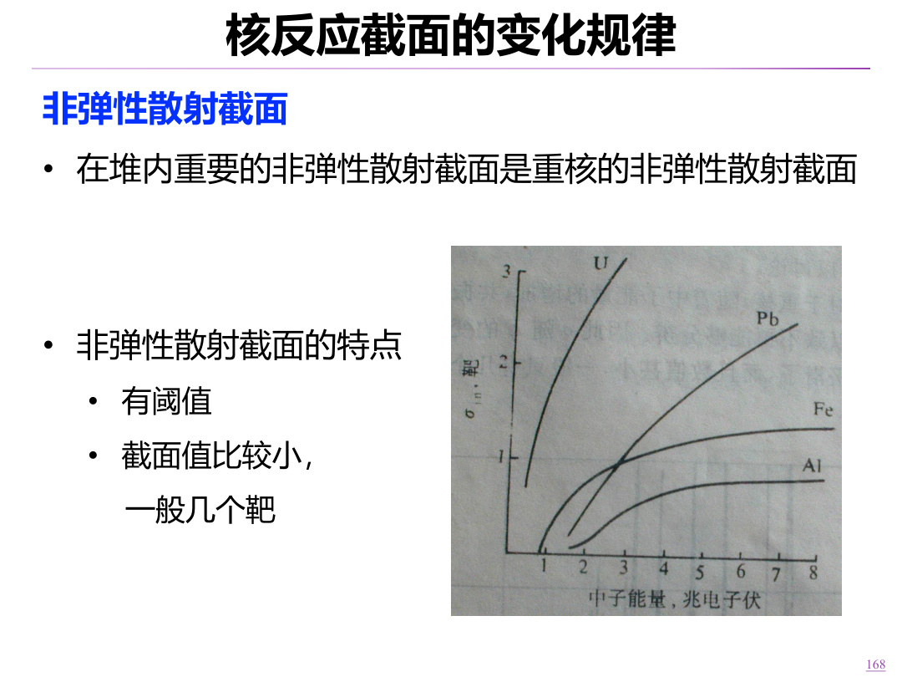
PDF 第 168 页先做一个判断题：同一核素按一般吸收截面规律，哪个能区的截面比较小？高能区。接下来转到散射，先讲规律较容易概括的非弹性散射。
堆内比较重要的是重核的非弹性散射。为什么？同学回忆前一讲，轻核第一激发能级较高，非弹性散射通常需要几MeV的中子；重核的阈能比较低，更容易在堆内能区发生，并使中子降能。
这类截面的两个主要特点是有阈值，数值一般为几个b。看图应先找反应开始显著出现的能量，再看纵轴上的数值。机理虽复杂，本节先掌握这两个图像特征。
9. 弹性散射曲线：平台、低能端与读数
28:09–32:14 · 课件PDF 169-172 · 对应讲义
展开对应课件页
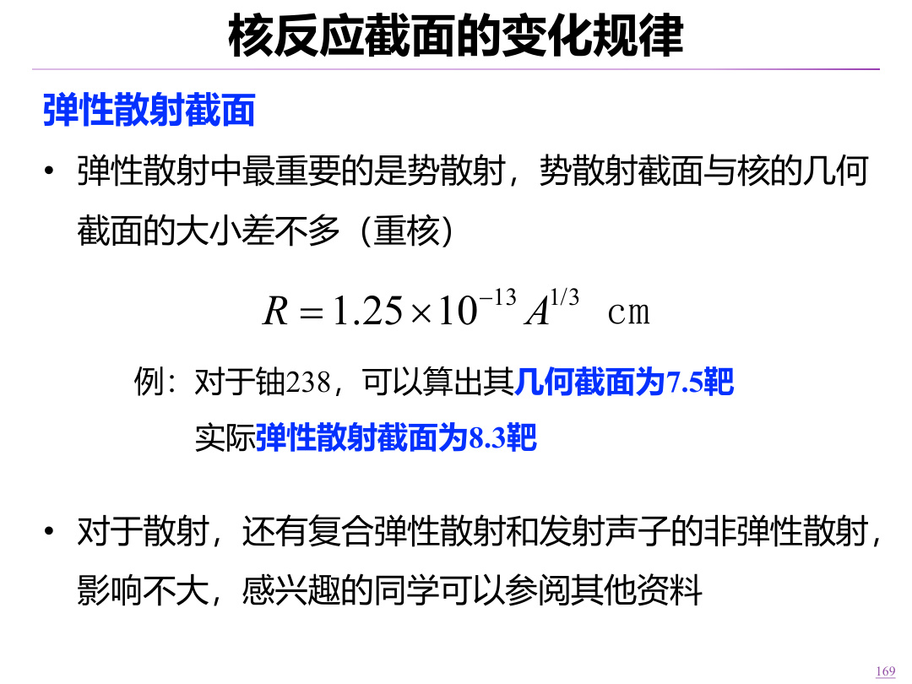
PDF 第 169 页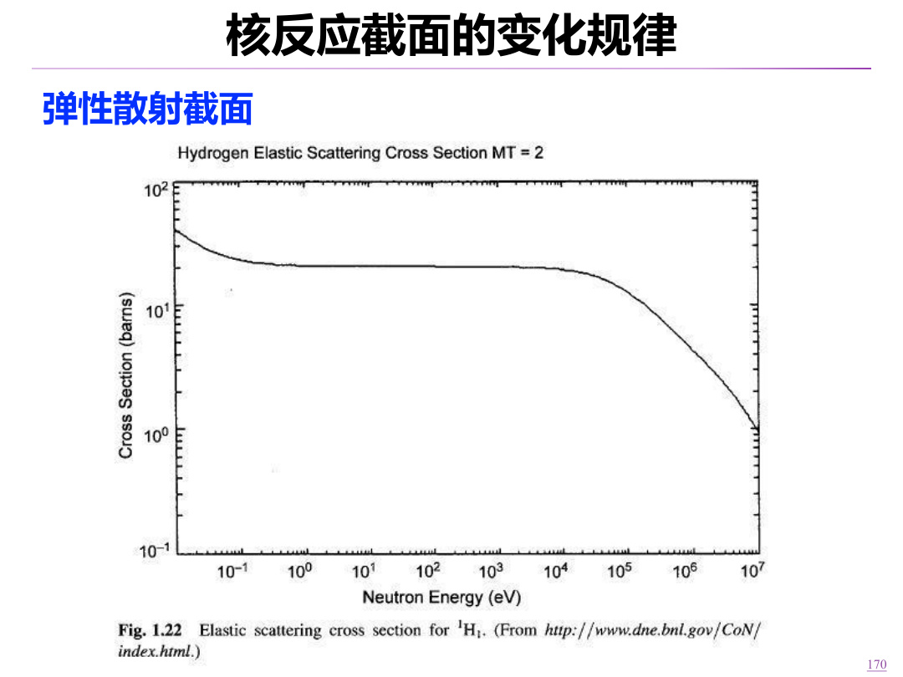
PDF 第 170 页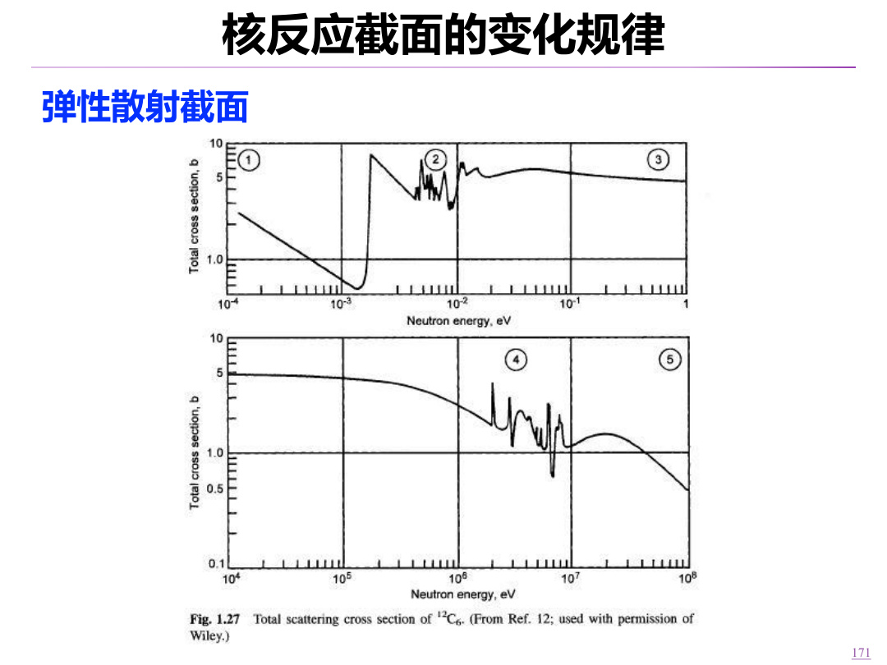
PDF 第 171 页PDF 第 172 页弹性散射中先看势散射，可以直观想成中子没有形成复合核就被核势改变运动方向。课件用铀-238给出约7.5 b的尺度与约8.3 b的实际弹性散射截面作比较。几何投影面积与这一尺度的区别见来源记录。其他机制，如复合弹性散射和与声子有关的散射，感兴趣的同学可以继续查资料。
看氢的曲线，有很长一段基本平坦，低能端上翘，高能端下降。再看碳的图，先认清英文写的是总散射截面还是其他反应截面，然后比较形状。把氢和碳画在同一张图里，这些特征更清楚。
课堂的多选判断包括“较长区间保持常数”“高能区较小”“很低能端有近似1/v趋势”“散射截面不算小”，教师按所展示曲线判为都对，特别提醒看纵轴数字。极低能端可到上千b，但平台并不是这个数值。拿到表格或计算结果，不能只看线的走向，还要看尺度。
教师再次用波粒二象性说明低能行为，并请大家回顾量子力学。不过不同散射模型与温度条件有区别，本讲保留图上现象，不把它推广成所有散射都严格服从1/v。
10. 两类核素的裂变截面
32:14–35:59 · 课件PDF 173-178 · 对应讲义
展开对应课件页
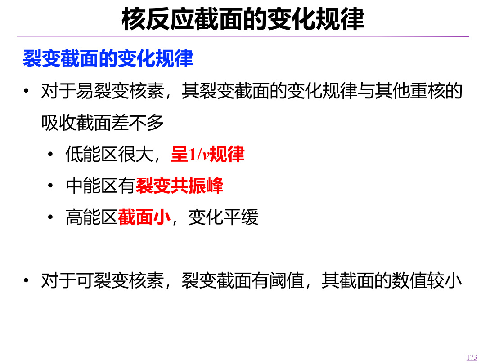
PDF 第 173 页PDF 第 174 页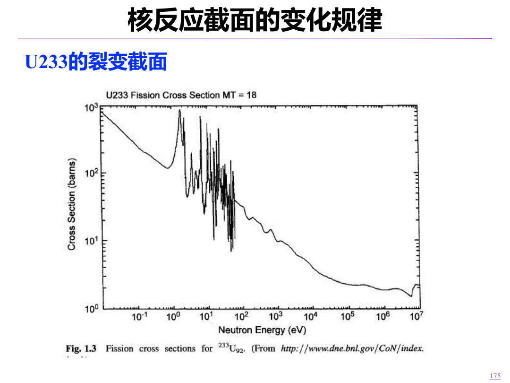
PDF 第 175 页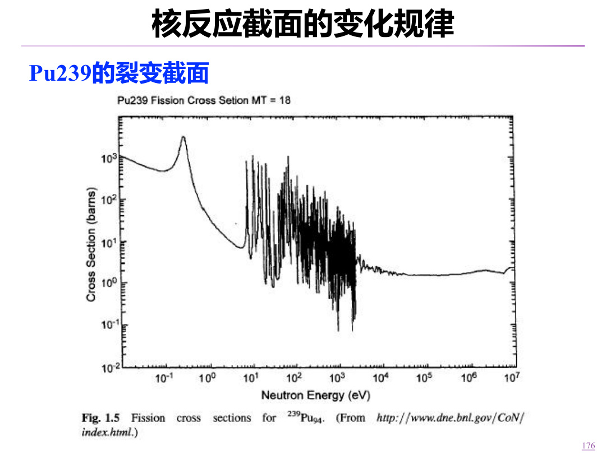
PDF 第 176 页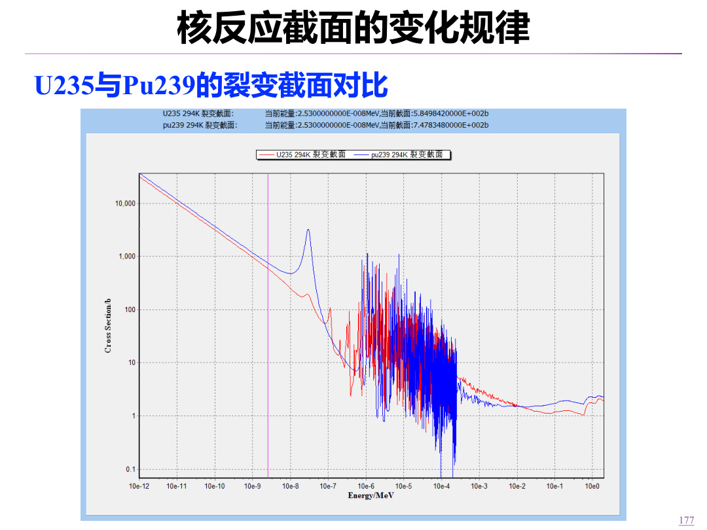
PDF 第 177 页PDF 第 178 页对易裂变核素，低能中子也能引起裂变，其裂变截面与其他重核的吸收曲线相似：低能较大并有近似1/v趋势，中能有裂变共振，高能较小且相对平缓。裂变本身是吸收后的一种结果，这样联系前面的规律就容易理解。
对课堂所称的可裂变而非易裂变核素，则要越过一定能量条件才有显著裂变截面。铀-235和铀-238画在一起，铀-235从低能端就有明显曲线、共振结构；铀-238在高能端才出现较大的值。图上显示下限不能直接当作物理阈值。
铀-233和钚-239同属易裂变核素，也可按这条主线读图；某些能段会偏离简单1/v。铀-235与钚-239对比图，以及其他可裂变核素的曲线，进一步显示了低能是否有显著裂变、共振结构和高能数值的差别。到这里，截面随能量变化的主要规律就讲完了。
11. 从实验与理论形成核数据库
35:59–39:50 · 课件PDF 179-180 · 对应讲义
展开对应课件页
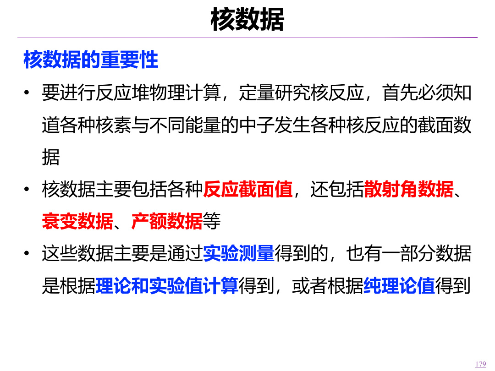
PDF 第 179 页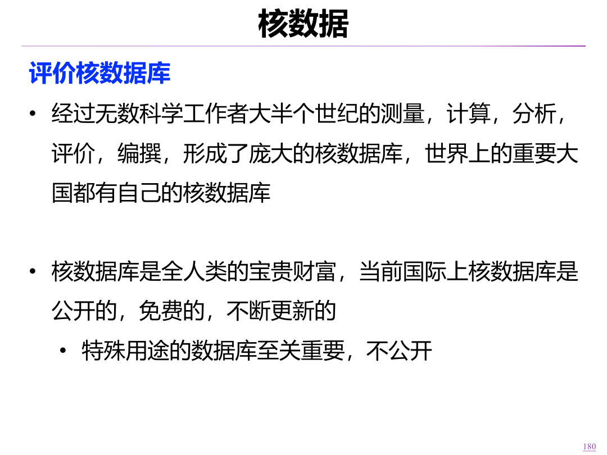
PDF 第 180 页反应堆物理计算要知道各核素在不同中子能量下的反应截面。核数据还包括发生反应后的散射角、衰变和产额等，不能只想到一个截面数字。
这些数据既来自实验，也来自理论与实验结合的计算。实验装置能测到的点有限，怎样用模型补足和反推整条曲线，是很重要的研究工作。教师提到AI辅助核截面计算的研究报道，并指出截面研究也能帮助检验原子核、衰变与量子理论模型；该报道的具体论文没有在课堂材料中列出。
经过长期测量、计算和评价，形成了不同国家的核数据库。课堂列举中国CENDL、美国ENDF以及俄罗斯、日本、欧洲的数据库，还提到聚变和天体物理等用途可能关注不同能量与反应道。教师关于某些库公开性和用途的具体说法保留于来源记录，不能仅凭库名的字母判断公开或保密。
使用评价数据，要处理实验条件、误差与协方差等，并结合理论模型，把有限能量点的信息组织成可用于较宽能区的完整数据。这是一个规模很大的工程。
12. 数据格式、程序存储与裂变问题
39:50–42:43 · 课件PDF 181-182 · 对应讲义
展开对应课件页
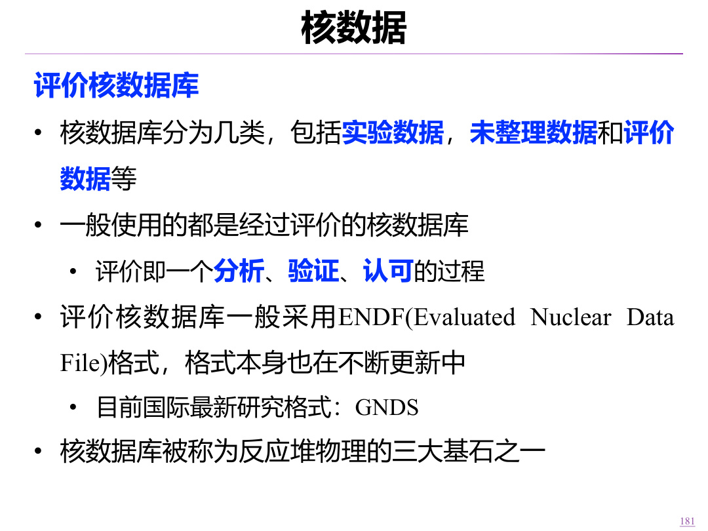
PDF 第 181 页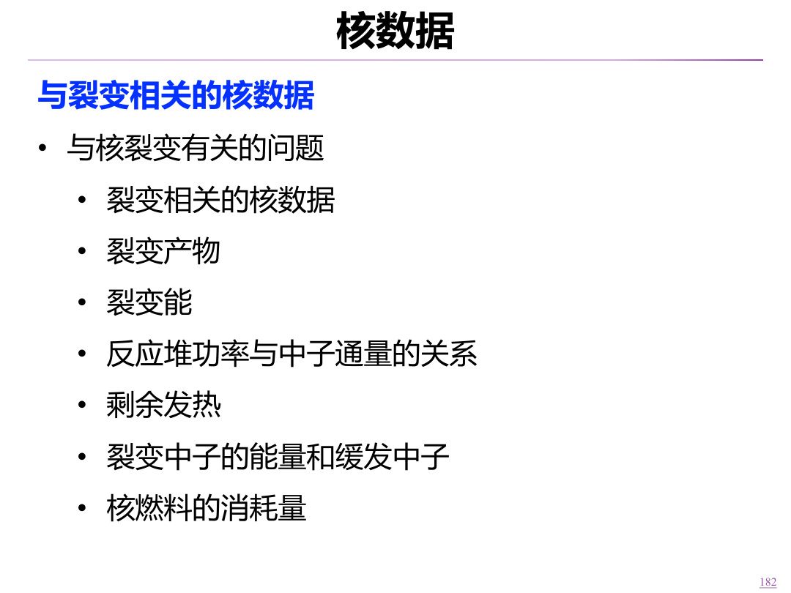
PDF 第 182 页评价数据一般使用规定格式，课堂提到ENDF-6和GNDS。计算程序读入以后，还可能转换成自己的内部格式。教师以团队蒙特卡罗程序和面向GPU的工作为例：显存有限，就要减少重复存储，把同一问题的内存需求从十几或二十GB降到约1GB。这是课堂介绍的特定项目经验。
教师问一套实用核数据库有多大，同学提出不同数量级。回答是要看程序和数据类型：多群数据可以很紧凑，核素较多的蒙特卡罗点截面库则可能达到GB量级。课堂的10 K与10 G只是所举情况，不是统一规格。
核数据是反应堆物理计算的基础之一。有了它们，才有条件计算反应。接下来要讨论与裂变有关的几个问题：每次裂变放出多少中子，产生哪些裂变产物，放出多少能量，功率与中子通量有什么关系，停堆后是否还有发热，以及后续的中子能谱、缓发中子和燃料消耗。本次实际讲到剩余发热。
13. 三个中子参数与近似公式
42:43–45:19 · 课件PDF 183-184 · 对应讲义
展开对应课件页
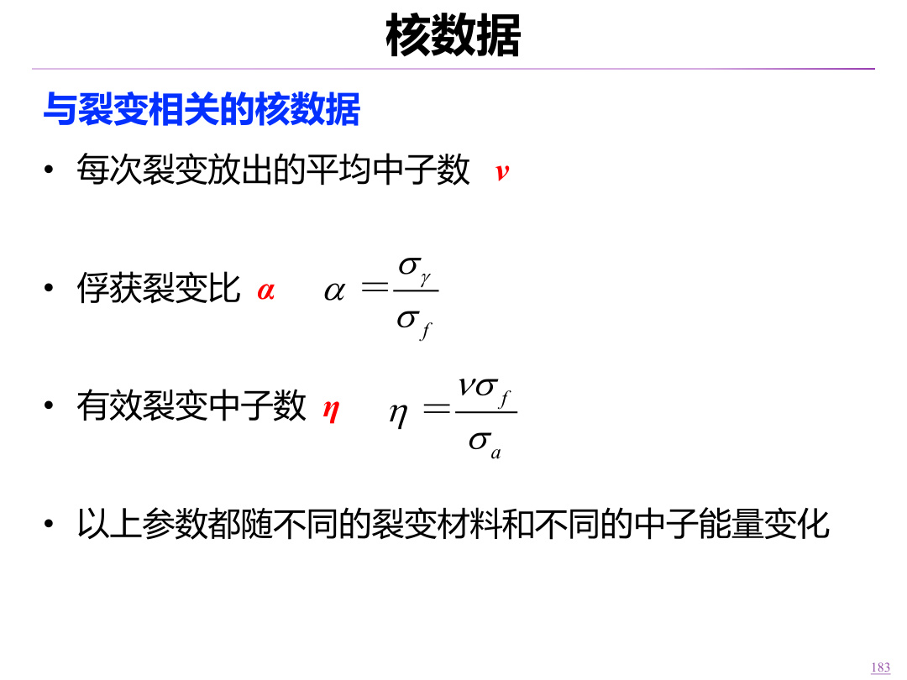
PDF 第 183 页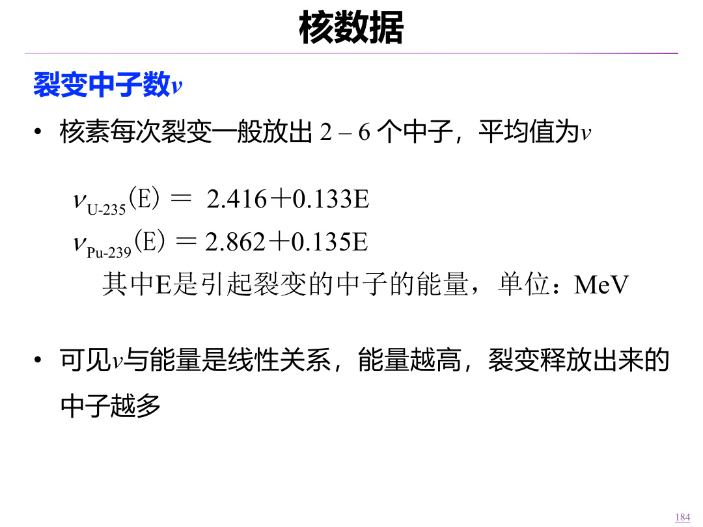
PDF 第 184 页先定义三个量。ν是每次裂变放出的平均中子数；α是俘获裂变比，等于σγ/σf；η是燃料吸收一个中子后平均能产生的裂变中子数。它等于ν乘σf/σa，因为一次吸收中只有一部分导致裂变，再乘上每次裂变的平均中子收益。
这些参数都随核素和入射能量变化。每次裂变放出的中子数不是固定数，所以要取平均；不能把平均数ν误记成固定的3。
课件给铀-235和钚-239的线性近似式，入射中子能量E用MeV。大家从公式中找规律：低能区接近一个定值，随入射能量提高平均中子数增加，同一能量下钚-239比铀-235放出更多中子。课堂在这里短暂休息。
14. 读ν的曲线与表格
45:19–47:37 · 课件PDF 185-186 · 对应讲义
展开对应课件页
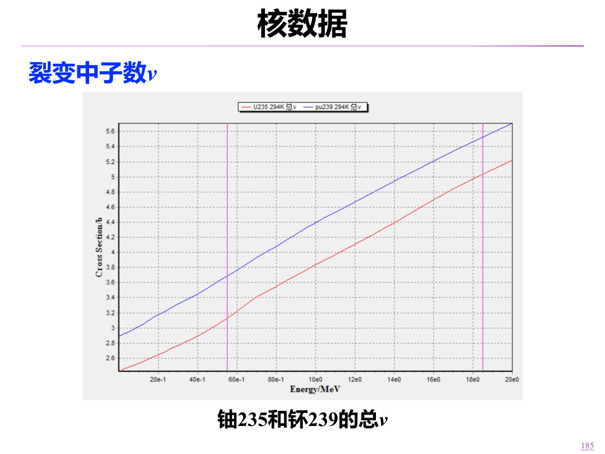
PDF 第 185 页PDF 第 186 页接着看平均中子数随能量变化的图。在线性能量图上，热中子能区占的宽度很小；不要因为对数坐标中低能区显得宽，就误以为它在这张图上也占很大范围。图上整体近似线性，钚-239同能量下的平均中子数高于铀-235。
表格还列了铀-233、钍-232和铀-238。前三种易裂变核素同时列出热区和高能区的数值。对比铀-235、铀-233、钚-239，在所给同能量条件下，铀-235较少、钚-239较多。课堂选择题据此应选钚-239。
这又联系到前一讲的铀钚循环与钍铀循环：铀-238转化为钚-239后参与裂变，其每次裂变的中子收益会不同。教师提醒看表不能走马观花，应从中提炼这些基本比较；是否能实际增殖还需完整中子收支。
15. 每次吸收的有效中子收益
47:37–50:24 · 课件PDF 187-188 · 对应讲义
展开对应课件页
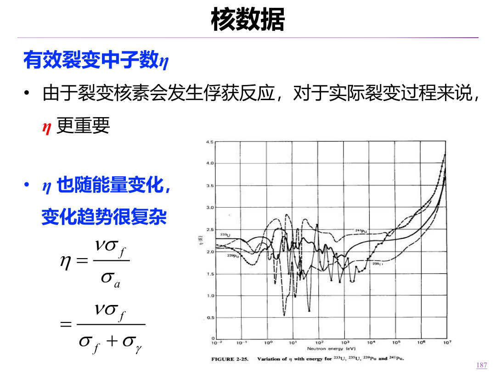
PDF 第 187 页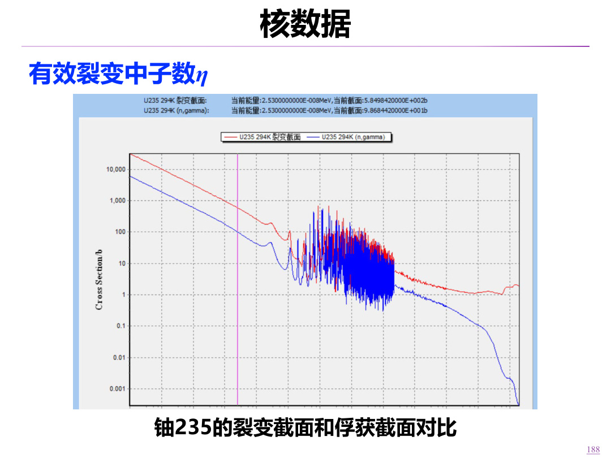
PDF 第 188 页ν只数发生裂变后的平均中子数，但燃料还会俘获中子，因此更关心η：一个中子被燃料吸收以后，预期换来几个裂变中子。
教师问系统临界时中子怎样平衡。回答是产生率等于损失率，损失不仅是吸收，还包括泄漏。若有这些额外损失，燃料每次吸收的收益必须有余量，不能吸收一个只产生一个就指望维持实际反应堆。
这里定义的η针对燃料核素，在某些能区可超过2，随能量变化也很复杂，因为裂变与俘获截面都有结构。看铀-235两条竞争截面，有些区间的俘获会降低有效收益。前一讲讨论过让更多中子用于裂变，就要结合能谱与竞争反应看问题；课堂也用快堆所处能区作比较，不能只凭单独一条曲线判断堆的全部性能。
16. 随机裂变与产额定义
50:24–52:39 · 课件PDF 189-192 · 对应讲义
展开对应课件页
PDF 第 189 页PDF 第 190 页PDF 第 191 页PDF 第 192 页除了中子，裂变还产生新的原子核。铀-235可有很多裂变通道，通常分成两个主要碎片，也有三分裂变。碎片往往还会衰变，把碎片及其衰变产物合称裂变产物。随着堆内辐照和衰变，组成会很复杂，研究它们既涉及放射化学，也涉及反应堆燃耗计算。
同样能量的中子打到同一种核，具体裂变结果仍有随机性，就像掷骰子。课件例子一条产生氪-90、钡-144和两个中子，另一条产生铷-93、铯-140和三个中子。它们都是说明不同通道，而不是说每次都固定发生其中一种。
怎样描述这种随机结果？定义平均产额：每次裂变平均产生某种核素多少个，就用这一平均数表示它的裂变产额。课件用γ表示产额，此处不要与γ光子混淆。
17. 双峰曲线与质量数115的判断
52:39–55:47 · 课件PDF 193 · 对应讲义
展开对应课件页
PDF 第 193 页裂变质量产额曲线像双峰，说明非对称裂变占优势。课件给出的主要质量范围约75到160，峰在约92和144附近。图上比较热中子与14 MeV中子引发铀-235裂变的两条曲线。
教师问各质量数的产额加起来大约多少，同学答2。直觉是一次通常裂成两个主要碎片；若讨论三分裂变，还要说清是否把额外轻粒子包括在统计中。百分数产额相加时对应约200%，不能把对数图纸上的几何面积直接读成这个数。
接着判断“质量数115的裂变产物，在快堆乏燃料中比例比压水堆小”。课堂先把问题转成图上的能量比较：质量数115在谷底附近，高能入射曲线比热中子曲线高，所以按图示趋势，应否定这个说法。实际乏燃料比例还会受更多因素影响，这个课堂问题的主要用意是练习将文字题转成刚学的曲线关系。
18. 不同材料产额与常用放射源
55:47–59:39 · 课件PDF 194-196 · 对应讲义
展开对应课件页
PDF 第 194 页PDF 第 195 页PDF 第 196 页不同入射能量的产额曲线不同，不同裂变核素的曲线也不同。因此通过产物对比，可以为分析裂变材料提供线索。教师以监测反应堆与核活动作应用背景，未提供具体案例的技术数据。
再看不同核素热中子裂变的对比图：有铀-233、钚-239、铀-235，也有65%铀与35%钚的混合示例。这里65和35是图示配比，不是核素质量数。
课堂问工业常用钴-60、铯-137和铱-192，哪一种主要来自裂变产物。先用产额的质量范围判断：钴太轻，铱较重，最符合的是铯-137。钴-60可以用钴-59俘获一个中子活化得到；铱-192通常也走活化途径。要把上一讲的俘获和活化与本讲的裂变产额联系起来。
裂变产物的种类和数量会影响反应堆动态行为和堆芯寿命，也与严重事故时的放射性释放有关，气态、易挥发产物需要特别关注。教师提到正常运行和事故状态下的环境监测，以及铯、氙等例子；环境影响的完整来源不只包括裂变产物，相关绝对化说法见来源记录。
19. 裂变能量换算与百万千瓦陷阱
59:39–01:02:11 · 课件PDF 197-198 · 对应讲义
展开对应课件页
PDF 第 197 页PDF 第 198 页裂变能来自质量亏损。一般计算取每次铀-235裂变约200 MeV，由1 eV约等于1.6×10⁻¹⁹ J可换算：1 W热功率对应约3.1×10¹⁰次裂变每秒，1 MW对应约3.1×10¹⁶次每秒。瓦就是焦耳每秒，先把单次裂变能量换成焦耳即可。
现在问百万千瓦级核电站每秒约发生多少次裂变。同学先把百万千瓦换成10⁹ W，得到10¹⁹量级的直代结果。教师追问：百万千瓦是什么功率？是电功率，而裂变提供的是热功率。必须考虑发电效率，通常这个量级的压水堆热功率约为3000 MW，因此裂变率约10²⁰次每秒。
这一题要提醒大家，公式里的每个量代表什么，比机械地代数字更重要。不能只记A等于B乘C，还要理解其物理含义与逻辑关系。
20. 为什么功率与通量有关
01:02:11–01:05:18 · 课件PDF 199-200 · 对应讲义
展开对应课件页
PDF 第 199 页PDF 第 200 页每秒裂变次数就是堆内总体积的裂变反应率，再乘单次可利用裂变能量就是热功率。在均匀近似下，P等于ΣfΦV再乘Ef。如果堆的体积、平均裂变截面和能谱都基本固定，功率就与通量水平成正比。反应堆物理很重要的任务，就是求出通量的水平和分布。
若堆内核燃料装量较少，为达到同样功率，通量需要更高。为什么？不要只凭感觉。Σf=Nσf，装量减少在这些条件下意味着N减少，所以宏观裂变截面变小；P与V保持不变时，就要由较大的Φ补偿。
教师借此提醒大家，面对一句看似合理的话，也要把感性认识转换成可检查的数学关系。课堂联系到短视频中容易引起情绪的说法，要求大家透过表象检查背后的逻辑；这里的练习就是辨认哪个量变了、哪些条件固定。
21. 由给定反应率反求两个截面
01:05:18–01:08:14 · 课件PDF 201-203 · 对应讲义
展开对应课件页
PDF 第 201 页PDF 第 202 页PDF 第 203 页再把逻辑重复一遍：相同核素和给定能量条件下，微观截面来自核数据；N减少，大Σf随之减少，保持同样体积与功率就要提高Φ。课件还用“裂变次数除以每MW对应的裂变次数”写出功率公式。
例题给出通量密度3×10¹³ cm⁻²s⁻¹，每立方厘米有10²⁰个铀-235原子，裂变反应率密度1.29×10¹² cm⁻³s⁻¹，要求宏观与微观裂变截面。先用Σf=r/Φ，再用σf=Σf/N。
教师与同学把计算步骤说清后，没有在课堂逐行展开数值演算，请大家看课件例题。相邻英文计算页作为参看资料；讲义中补出了可复算的数值结果。
22. 两个功率指标与富集度判断
01:06:54–01:09:44 · 课件PDF 204 · 对应讲义
展开对应课件页
PDF 第 204 页知道单次裂变约200 MeV后，再看两个常用状态参数。堆芯功率密度是单位堆芯体积的热功率，压水堆约100 MW/m³；燃料比功率是单位燃料质量的热功率，课件给约35 MW/t。
前言曾估算百万千瓦电站的堆芯体积：约3000 MW热功率除以100 MW/m³，得到约30 m³。同样也可以用比功率估算燃料质量。
判断题：在比功率相同、其他条件相近时，富集度高的燃料中通量是否小一些？课堂判为正确。比功率相同表示相同燃料质量的发热相同；富集度高，易裂变核密度高，宏观裂变截面大，于是维持同样反应率可采用较小通量。仍然是找清r、Σ和Φ之间的关系。
23. 裂变能的构成和回收位置
01:09:44–01:13:22 · 课件PDF 205-209 · 对应讲义
展开对应课件页
PDF 第 205 页PDF 第 206 页PDF 第 207 页PDF 第 208 页PDF 第 209 页裂变产生碎片、中子、γ、β以及中微子等，释放的能量由这些粒子或辐射携带，再传给周围物质。铀-235课件表给总能量约207 MeV，其中碎片动能约168 MeV，β约8 MeV，衰变γ约7 MeV，中微子约12 MeV，还有瞬发γ和裂变中子的能量。
不是所有能量都能回收。碎片射程短，主要就地碰撞沉积；中子动能通过慢化等过程传给材料；γ在堆内各处与物质作用。中微子很难被吸收，大部分直接跑掉。但中子后续俘获又会释放能量，综合起来可利用能量大约200 MeV。
课堂把能量分成瞬发和缓发，又讨论回收位置：碎片在产生地附近，中子大量在慢化剂中，γ可在整个堆芯中沉积，β主要在产地附近。相邻表格可对照阅读。并非所有热量都产生于燃料内部，而比功率仍可把总热功率折算到单位燃料质量上；归一口径与实际沉积位置是两件事。
24. 可利用能量与转化为热
01:13:22–01:15:13 · 课件PDF 210-211 · 对应讲义
展开对应课件页
PDF 第 210 页PDF 第 211 页考虑实际损失和估算方便，铀-235、铀-233、钚-239常统一取每次裂变可利用能量约200 MeV。课件另给按Z和A估算的经验公式。用它比较铀-235与钚-239，后者Z和A更大，算出的可利用能量也稍高，但都在约200 MeV这个量级。
裂变释放的能量通过微观粒子和辐射与材料的相互作用传递，最后形成热。于是我们在这一估算中所说的核功率对应热功率，而不是电功率。中微子与物质相互作用很弱，它携带的约百分之几能量基本损失，不能按普通热源收集。
为什么不能有效收集中微子能量？下面用平均自由程作一个数量级计算。
25. 中微子的平均自由程算例
01:15:13–01:16:17 · 课件PDF 212 · 对应讲义
展开对应课件页
PDF 第 212 页给定中微子与物质相互作用截面约10⁻⁴³ cm²，材料核密度约10²³到10²⁴ cm⁻³。取较大核密度10²⁴ cm⁻³，宏观截面Nσ等于10⁻¹⁹ cm⁻¹，其倒数为10¹⁹ cm，也就是10¹⁴ km，约10.6光年。
这个自由程已经是天文尺度，所以穿过地球也很容易而不发生反应。课堂用“以光速飞行十年左右才平均作用一次”帮助理解尺度；它表达平均概率，不是某一个粒子必须等十年才会作用。
26. 怎样增加中微子事件数与研究旁例
01:16:17–01:21:18 · 课件PDF 213 · 对应讲义
展开对应课件页
PDF 第 213 页中微子自由程这么长，怎样逮到它？先把“逮到”翻译成物理问题：就是探测到一次相互作用，要提高探测器中的总反应数。
同学提出提高Σ或Φ，教师继续追问有没有遗漏。反应率密度还要乘体积V才能得到总事件率。截面本身很小，实际就会考虑增加探测体积、靶粒子总数或通量。大探测器可以提高V；对反应堆中微子，把位置选得更靠近反应堆可提高通量。课堂用“大水池”的例子说明大体积的作用。
教师介绍太阳中微子、振荡、大亚湾等研究方向，也鼓励对基础物理有兴趣的同学了解。课堂还回忆与其他教师讨论小型反应堆和很短基线实验的设想，提到数米距离内某种待研究效应；具体效应、距离和“衰变”的表述没有在材料中确定，保留为课堂研究设想，不据此建立中微子物理结论。
如果未来能提供合适的小型源和近距离实验条件，也可能支持基础物理研究。这里讨论完后，课堂转回反应堆发热：裂变停止以后还会不会有热？
27. 停堆并不意味着热源为零
01:20:24–01:22:06 · 课件PDF 214 · 对应讲义
展开对应课件页
PDF 第 214 页反应堆停堆，链式裂变受到抑制，但能量释放没有马上停止。堆内已经积累大量裂变产物，其中不稳定核素还在衰变，放出β、γ等辐射并沉积能量。这就是停堆后仍有剩余发热的主要原因。
可以快速压低裂变功率，却不能靠停堆指令让已有放射性核素同时停止衰变。剩余发热大小与停堆前功率、运行历史、堆型和燃料组成有关，因为这些因素决定了积累哪些核素、各有多少。这对反应堆安全至关重要。
28. 余热经验式与曲线阅读
01:22:06–01:23:53 · 课件PDF 215-216 · 对应讲义
展开对应课件页
PDF 第 215 页PDF 第 216 页剩余发热可通过核素衰变和核设计计算程序计算，教师提到团队RMC也有相关能力；有兴趣的同学可以自行向助教了解。课堂还给了一个简化经验式，大T是停堆前运行时长，小t是停堆后经过时间，停堆前功率P用瓦，而该页计算结果写成MeV/s。
要使用这条式子，先区分运行时间和停堆时间，核对单位。教师建议课后参考资料了解经验式的来源。
课件再画出运行一个月后的相对余热曲线。最明显的规律是随停堆时间增加而下降，但教师提醒不能只说“递减”，还要读纵轴大小，思考剩余热量究竟有多大。
29. 余热比例、热功率与加热水算例
01:23:53–01:27:04 · 课件PDF 216 · 对应讲义
展开对应课件页
PDF 第 216 页有同学觉得剩余发热很少，教师用3000 MW反应堆作比较：即便约6%，按题设相乘仍有180 MW，是很大的持续热源。百分数小不代表绝对热功率小。
曲线早期下降比较快，十秒到数十秒、数分钟都有变化。需要由冷却把这段时间释放的能量带走；变化功率在时间上的积分是能量。曲线看起来下降，并不意味着它严格服从单一指数。
再估计百万千瓦电功率压水堆停堆一小时后的功率。课堂按图近似取停堆前热功率的1%，约3万千瓦，即30 MW，仍相当于很多电热水壶同时工作。
假设这一小时之后的功率暂按不变计，一分钟能把多少水从0℃加热到100℃？用功率乘60秒，再除以比热容与温升，约为4吨。这个结果是加热到沸点的水量，若要全部汽化还须潜热。课堂用这个数量级说明，即使停堆已过一小时，若冷却不继续，温度仍可很快升高，余热是需要认真处理的固有问题。
30. 事故旁例中的冷却问题
01:27:04–01:28:30 · 课件PDF 217 · 对应讲义
展开对应课件页
PDF 第 217 页教师用三里岛、切尔诺贝利和福岛作为历史背景，重点指出三里岛与福岛的堆芯冷却和余热排出问题：即使反应堆停下，若冷却能力丧失，燃料仍可能因持续发热受损。
课堂对福岛作了简化叙述，提到海啸后电源与循环冷却受损，并批评事故应对中可能顾虑设备损失而延误注水的做法。关于“72小时”“专家建议”“决策动机”的具体历史断言，本材料没有给出证据，未把它们写成已经核实的事故时间线；原转写对应区间仍可回查。
这一段服务于本讲的物理问题：及时停堆后仍需有可靠的排热路径。完整事故原因、设施状态与决策过程需另外查阅专门事故调查资料。
31. 能动与非能动余热排出、乏燃料
01:28:30–01:31:11 · 课件PDF 217-219 · 对应讲义
展开对应课件页
PDF 第 217 页PDF 第 218 页PDF 第 219 页现代反应堆安全设施中，余热排出和应急堆芯冷却都很重要。ECCS指Emergency Core Cooling System，即应急堆芯冷却系统；它与广义余热排出设施有关，但不能把所有系统等同起来。
课堂以华龙一号示意：正常或有电条件下可依靠泵循环；特定事故条件下可利用重力、水箱和自然循环形成非能动路径，把热带到最终热阱。教师介绍能动与非能动结合的思路，并提到设计条件下72小时无需人为干预的概念，这不是对所有故障情况的无条件保证。
高温气冷堆的课堂例子强调燃料和堆芯固体的导热、外围水冷壁与自然循环；钠冷快堆例子强调金属传热、独立余热换热器和类似空冷塔的自然循环排热。理解时都要顺着热量走向，看它怎样从堆芯传到外部。
剩余发热也存在于乏燃料干法、湿法储存以及核废料处理、运输和永久地质处置，相关冷却和传热问题都要考虑。本次课程到这里结束。